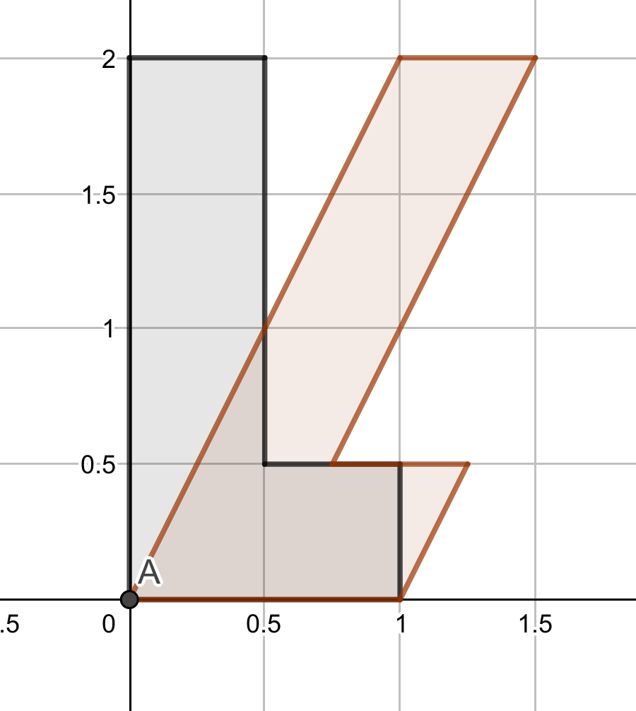
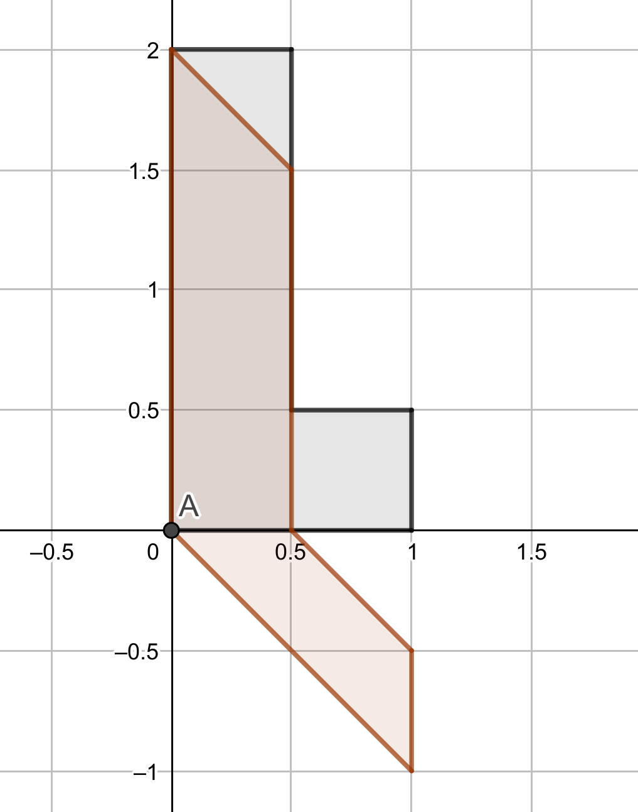

Capítol 2. Espais vectorials i aplicacions lineals
El contingut d’aquesta secció també es pot trobar a [1 Secció 2.2] i [2 Temes 2, 3, 4].
2.1 Matrius com a aplicacions lineals
En aquest capítol considerarem funcions de l’espai \(\K^n\) a l’espai \(\K^m\). Recordem que aquests espais els hem definit com \(\K^n=M_{n\times 1}(\K)\) (i anàlogament per \(\K^m\)), i els seus elements els anomenem vectors. Així, una funció \(f\) assigna a cada vector \(\vec x\in \K^n\) un vector imatge \(f(\vec x)\in \K^m\). Un primer exemple ens els donen les matrius:
Exemple 2.1 Considerem una matriu \(A\in M_{m\times n}(\K)\). Aleshores l’aplicació associada a \(A\) és \(f_A\), definida com: \[f_A(\vec x) = A\vec x.\] Tal i com hem remarcat anteriorment, l’aplicació \(f_A\) assigna a cada vector \(\vec x\) una combinació lineal de les columnes d’\(A\), on els coeficients venen donats per \(\vec x\).
De les propietats del producte de matrius, sabem que \(f_A\) satisfà:
\(f_A(\vec x+\vec y) = f_A(\vec x) + f_A(\vec y)\) per a tot \(\vec x, \vec y \in \K^n\), i
\(f_A(\lambda \vec x) = \lambda f_A(\vec x)\) per a tot \(\lambda\in\K\) i tot \(\vec x\in \K^n\).
Podem prendre l’aplicació \(f_A\) com a model de les aplicacions que volem considerar en aquest curs:
Definició 2.1 Diem que una aplicació \(f\colon \K^n\to \K^m\) és lineal si satisfà
\(f(\vec x+\vec y) = f(\vec x) + f(\vec y)\) per a tot \(\vec x, \vec y \in \K^n\), i
\(f(\lambda \vec x) = \lambda f(\vec x)\) per a tot \(\lambda\in\K\) i tot \(\vec x\in \K^n\).
Proposició 2.1 Una aplicació \(f\colon \K^n\to \K^m\) és lineal si i només si existeix una matriu \(A\in M_{m\times n}(\K)\) tal que \(f=f_A\).
Prova. Ja hem vist que si \(f=f_A\) aleshores \(f\) és lineal. Recíprocament, suposem que \(f\) és lineal. Aleshores, com que \[\begin{pmatrix} x_1\\x_2\\x_3\\\vdots\\x_n \end{pmatrix} =x_1\begin{pmatrix} 1\\0\\0\\\vdots\\0 \end{pmatrix} + x_2\begin{pmatrix} 0\\1\\0\\\vdots\\0 \end{pmatrix} +\cdots+ x_n \begin{pmatrix} 0\\0\\\vdots\\0\\1 \end{pmatrix},\] el valor \(f(\vec x)\) es pot calcular com \[f\begin{pmatrix} x_1\\x_2\\x_3\\\vdots\\x_n \end{pmatrix} =x_1f\begin{pmatrix} 1\\0\\0\\\vdots\\0 \end{pmatrix} + x_2f\begin{pmatrix} 0\\1\\0\\\vdots\\0 \end{pmatrix} +\cdots+ x_n f\begin{pmatrix} 0\\0\\\vdots\\0\\1 \end{pmatrix}.\] Definim la matriu \(A\) com \[A=\begin{pmatrix} \mid & \mid &\mid & \mid\\ f(\vec e_1) & f(\vec e_2) &\cdots&f(\vec e_n)\\ \mid & \mid &\mid & \mid \end{pmatrix}\] on escrivim \(e_i\) com el vector format per zeros excepte en la posició \(i\), on hi ha un \(1\). Aleshores, per la definició de producte d’una matriu per un vector, tenim \(f(\vec x) = A\vec x\) per a tot \(\vec x\in \K^n\), com volíem veure.
És important remarcar com hem construït la matriu associada a una aplicació lineal \(f\) en la demostració anterior: donada \(f\colon \K^n\rightarrow \K^m\), la seva matriu associada és \[A=\begin{pmatrix} \mid & \mid &\mid & \mid\\ f(\vec e_1) & f(\vec e_2) &\cdots&f(\vec e_n)\\ \mid & \mid &\mid & \mid \end{pmatrix}.\] Els vectors \(\vec e_i\) sovint s’anomenen vectors estàndard: \[\vec e_i = \begin{pmatrix} 0\\\vdots\\0\\1\\0\\\vdots\\0 \end{pmatrix} \begin{matrix} \phantom{0}\\\phantom{\vdots}\\\phantom{0}\\(\textrm{posició } i)\\\phantom{0}\\\phantom{\vdots}\\\phantom{0} \end{matrix}\]
Com a primera aplicació, considerem ara dues aplicacions lineals \[\K^n \stackrel{g}{\rightarrow} \K^r \stackrel{f}{\rightarrow} \K^m,\] i suposem que \(f\) té matriu \(A\) i \(g\) té matriu \(B\). Considerem la composició \(f\circ g\), que és l’aplicació que envia \(\vec x\in \K^n\) a \((f\circ g)(\vec x) = f(g(\vec x))\). Per definició, sabem que per a tot \(\vec x\) tenim \[(f\circ g)(\vec x) = f(g(\vec x)) = A(B\vec x).\] Aquest últim terme és igual, per tal i com hem definit el producte \(A\), a \((AB)\vec x\). Per tant, obtenim que \(f\circ g\) és una aplicació lineal, amb matriu associada \(AB\). Veiem doncs que el producte de matrius “codifica” la composició d’aplicacions lineals, i això explica el per què de la definició del producte de matrius tal i com s’ha fet.
Exemple 2.2 Donades tres aplicacions lineals \[\K^t\stackrel{h}{\rightarrow}\K^n \stackrel{g}{\rightarrow} \K^r \stackrel{f}{\rightarrow} \K^m\] amb matrius respectives \(f=f_A\), \(g=f_B\), \(h=f_C\), el fet que la composició d’aplicacions és associativa (per definició) implica que el producte de matrius és associatiu, sense necessitat de fer cap càlcul: la matriu de la composició \(f\circ g \circ h\) és \(A(BC)\) i \((AB)C\) a la vegada, i per tant han de coincidir.
2.2 Aplicacions lineals i geometria
En aquesta § veurem algunes aplicacions lineals del pla \(\R^2\) i aprendrem a reconèixer com actuen a partir de la forma de la seva matriu. Podem visualitzar aquestes transformacions per exemple a https://shadanan.github.io/MatVis/.
2.2.1 Homotècies
Considerem una matriu \[\begin{pmatrix} k & 0\\0 & k\end{pmatrix}, k\in \R.\] Aquesta matriu envia el vector \(\vec x\) a \(k\vec x\). Per tant, multiplica els vectors per un escalar. Si \(|k|>1\), es tracta d’una dilació i, si \(|k|< 1\) es tracta d’una contracció. Si \(k\) és negatiu, aleshores també canvia el signe (es fa primer una simetria respecte l’origen). En general, aquestes transformacions s’anomenen homotècies.
2.2.2 Projeccions ortogonals
Considerem la matriu \(\begin{pmatrix}1&0\\0&0\end{pmatrix}\). Aquesta matriu envia el vector \(\vec x = \begin{pmatrix}x\\y\end{pmatrix}\) a \(\begin{pmatrix}x\\0\end{pmatrix}\). És a dir, projecta el vector sobre l’eix de les \(x\).
Més en general, considerem una recta \(\ell\) del pla, que talli l’origen. Qualsevol vector \(\vec x\) es pot escriure de manera única com \(\vec x = \vec x^{\parallel} + \vec x^{\perp}\), on el vector \(\vec x^\parallel\) és sobre la recta \(\ell\), i \(\vec x^\perp\) és perpendicular a \(\ell\).
Definició 2.2 La projecció ortogonal respecte la recta \(\ell\) és l’aplicació \(\operatorname{proj}_\ell\) definida com \[\operatorname{proj}_\ell(\vec x) = \vec x^\parallel.\]
Observem que \(\operatorname{proj}_\ell\) és una aplicació lineal (exercici).
Proposició 2.2 Sigui \(\vec v\) un vector paral·lel a la recta \(\ell\). Aleshores: \[\operatorname{proj}_\ell(\vec x) = \frac{\vec x\cdot \vec v}{\vec v\cdot \vec v} \vec v.\]
També podem trobar una fórmula per la matriu de la projecció ortogonal.
Proposició 2.3 Sigui \(\vec v = \begin{pmatrix}v_1\\v_2\end{pmatrix}\) un vector paral·lel a la recta \(\ell\). Aleshores la matriu de \(\operatorname{proj}_\ell\) és \[\frac{1}{v_1^2 + v_2^2}\begin{pmatrix}v_1^2&v_1v_2\\v_1v_2&v_2^2\end{pmatrix}\]
2.2.3 Reflexions
Considerem com abans una recta \(\ell\) que passi per l’origen. Volem definir la reflexió respecte la recta \(\ell\). És fàcil veure que
\[\operatorname{ref}_\ell(\vec x) = \vec x^\parallel - \vec x^\perp.\] Com que \(\vec x = \vec x^\parallel + \vec x^\perp\), podem escriure \[\vec x^\parallel - \vec x^\perp = 2\vec x^\parallel - \vec x.\] Per tant, \[\operatorname{ref}_\ell = 2\operatorname{proj}_\ell - \operatorname{id}.\] La matriu corresponent és fàcil de trobar a partir d’aquesta fórmula:
Proposició 2.4 Sigui \(\vec v = \begin{pmatrix}v_1\\v_2\end{pmatrix}\) un vector paral·lel a la recta \(\ell\). Aleshores la matriu de \(\operatorname{ref}_\ell\) és \[\frac{1}{v_1^2 + v_2^2}\begin{pmatrix}v_1^2-v_2^2&2v_1v_2\\2v_1v_2&v_2^2-v_1^2\end{pmatrix}.\]
Fixem-nos que la matriu de \(\operatorname{ref}_\ell\) té la forma \(\begin{pmatrix}a&b\\b&-a\end{pmatrix}\), i que a més les entrades satisfan \(a^2 + b^2 = 1\). De fet, es pot veure que qualsevol matriu d’aquesta forma és la matriu d’una reflexió.
2.2.4 Rotacions
Les matrius de la forma \[\begin{pmatrix} \cos\theta&-\sin\theta\\ \sin\theta&\cos\theta \end{pmatrix}\] corresponen a una rotació d’angle \(\theta\). Observem que aquesta matriu és de la forma \[\begin{pmatrix} a&-b\\b&a \end{pmatrix},\quad a^2+b^2=1\] i totes les matrius d’aquesta forma són rotacions.
Exercici 2.1 Considereu la matriu de rotació d’angle \(\theta_1\) i la de rotació d’angle \(\theta_2\). Descriviu la composició d’aquestes dues aplicacions i, fent servir el producte de matrius, redescobriu les fórmules per la duplicació d’angles que heu vist a secundària.
Proposició 2.5 Una matriu de la forma \(\begin{pmatrix}a&-b\\b&a\end{pmatrix}\) és la composició d’una homotècia de magnitud \(k=\sqrt{a^2+b^2}\) amb una rotació d’angle \(\arctan(b/a)\) (si \(a\) és positius) o \(\arctan(b/a) + \pi\) (si \(a\) és negatiu).
2.2.5 Lliscaments
Per últim estudiarem les matrius de la forma \(\begin{pmatrix} 1&k\\0&1\end{pmatrix}\), on \(k\in \R\). Aquestes matrius fixen el vector \(\vec e_1\), mentre envien el vector \(\vec e_2\) a \(\begin{pmatrix}k\\1\end{pmatrix}\). Geomètricament, enviarien un quadrat en el pla a un rombe, on la base es manté fixa però els costats verticals s’esbiaixen. Direm que és un lliscament horitzontal.
De manera anàloga, la matriu \(\begin{pmatrix}1&0\\k&1\end{pmatrix}\) representa un lliscament vertical.
 
Exercici 2.2 Calculeu, en els casos que es pugui, les inverses de les matrius corresponents a homotècies, projeccions ortogonals, reflexions i lliscaments.
2.3 Subespais, generadors i bases
Tornem ara a considerar \(\K^n\) i les aplicacions lineals \(f\colon \K^n\to\K^m\).
Definició 2.3 Diem que un subconjunt \(W\subset \K^n\) és un subespai vectorial si \(W\) compleix que:
\(\vec 0 \in W\),
\(\vec u+\vec v \in W\) per a tot \(\vec u\) i \(\vec v\) de \(W\), i
\(\lambda \vec u\in W\) per a tot \(\vec u\in W\) i \(\lambda\in\K\).
Exemple 2.3
A l’\(\R\)-espai vectorial \(\R^3\) hi considerem \(F=\{(x,y,z) \in \R^3 \mid z=0\}\). Podem comprovar que és un subespai vectorial.
Més en general, si tenim un sistema d’equacions lineals homogeni amb \(n\) incògnites, podem identificar una solució \((x_1,\dots,x_n)\) (l’hem escrit com una fila per comoditat) amb un vector de \(\K^n\) i les solucions formen un subespai vectorial de \(\K^n\).
Com a cas particular de subespai vectorial tenim el següent:
Definició 2.4 Si \(\{\vec v_1, \dots \vec v_m\}\subset \K^n\), definim el subespai generat per \(\{\vec v_1, \dots \vec v_m\}\) com els vectors de \(\K^n\) que es poden escriure com a combinació lineal de \(\{\vec v_1, \dots \vec v_m\}\). Denotem aquest subconjunt com \(\langle \vec v_1, \dots \vec v_m \rangle\), i per tant tenim: \[\langle \vec v_1, \dots \vec v_m \rangle = \{\lambda_1 \vec v_1 + \cdots + \lambda_m\vec v_m \mid \lambda_i\in\K \}\]
Observació. Si \(\{\vec v_1, \dots \vec v_m\}\subset \K^n\), llavors \(\langle \vec v_1, \dots \vec v_m \rangle\) és un subespai vectorial.
Prova. Per simplificar la notació, definim \[W=\langle \vec v_1, \dots \vec v_m \rangle .\] Cal veure que si \(\vec u, \vec w\) pertanyen a \(W\), llavors \(\vec u+\vec w\) també hi pertany. Per definició d’\(W\), tenim que existeixen escalars \(\lambda_1, \dots ,\lambda_m\) i \(\mu_1,\dots,\mu_m\) tals que \(\vec u= \lambda_1 \vec v_1+\cdots +\lambda_m\vec v_m\) i \(\vec w=\mu_1\vec v_1+\cdots +\mu_m\vec v_m\). Llavors, tenim que: \[\vec u+\vec w = (\lambda_1+\mu_1)\vec v_1 + \cdots + (\lambda_m+\mu_m)\vec v_m ,\] obtenint que \(\vec u+\vec v \in W\).
Ara considerem \(\lambda \in \K\) i \(\vec u\in W\). Volem veure \(\lambda \vec u \in W\): com que \(\vec u\in W\), existeixen \(\mu_1, \dots , \mu_m\in\K\) tals que \(\vec u=\lambda_1\vec v_1 + \cdots + \lambda_m\vec v_m\). Llavors: \[\lambda \vec u = (\lambda \mu_1)\vec v_1 + \cdots + (\lambda \mu_m)\vec v_m ,\] pel que \(\lambda \vec u \in W\).
Exemple 2.4 Considerem \(\R^3\) com a \(\R\)-espai vectorial i els vectors (els escrivim per files) \(\{(1,0,0),(0,1,0)\}\), tenim que \(\langle (1,0,0),(0,1,0)\rangle\) són els vectors d’\(\R^3\) amb tercera coordenada zero.
Definició 2.5 Sigui \(f\colon \K^n \to \K^m\) una aplicació lineal.
Definim el nucli d’\(f\) (i el denotem com \(\Ker(f)\)) com el conjunt format pels vectors \(\vec v\in \K^n\) tals que \(f(\vec v)=\vec 0\).
Definim la imatge d’\(f\) (i la denotem com \(\Ima(f)\)) com el conjunt dels vectors \(\vec w\in\K^m\) tals que existeix \(\vec v\in \K^n\) tal que \(f(\vec v)=\vec w\).
Proposició 2.6 Si \(f \colon \K^n \to \K^m\) és una aplicació lineal, llavors:
\(\Ker(f)\) és un subespai vectorial de \(\K^n\).
\(\Ima(f)\) és un subespai vectorial de \(\K^m\).
Prova. Comprovem primer que \(\Ker(f)\) compleix les dues condicions de
la Definició 2.3: Considerem \(\vec u, \vec v \in \Ker(f)\), per
tant \(f(\vec u)=f(\vec v)=\vec 0\). Llavors:
\[f(\vec u+\vec v)=f(\vec u)+f(\vec v)=\vec 0+\vec 0 =\vec 0 ,\] per
tant \(\vec u+\vec v \in \Ker(f)\).
També, si \(\vec u \in \Ker(f)\) i \(\lambda\in\K\), llavors
\(f(\lambda \vec u)=\lambda f(\vec u)=\lambda \vec 0=\vec 0\), per tant
\(\lambda \vec u\in\Ker(f)\).
Comprovem ara que \(\Ima(f)\) també compleix les dues condicions: si \(\vec v_1,\vec v_2 \in\Ima(f)\), llavors existeixen \(\vec u_1, \vec u_2 \in \K^n\) tals que \(f(\vec u_1)=\vec v_1\) i \(f(\vec u_2)=\vec v_2\). Llavors es compleix que \(f(\vec u_1+\vec u_2)=f(\vec u_1)+f(\vec u_2)=\vec v_1+\vec v_2\), pel que \(\vec v_1+\vec v_2 \in \Ima(f)\). També, si \(\vec v\in \Ima(f)\) (per tant existeix \(\vec u\in \K^n\) tal que \(f(\vec u)=\vec v\)) i \(\lambda\in\K\), tenim que \(f(\lambda \vec u)=\lambda f(\vec u)=\lambda \vec v\), pel que \(\lambda \vec v \in \Ima(f)\).
Suposem que l’aplicació \(f=f_A\) està associada a una matriu \(A\in M_{m\times n}(\K)\) com a la Subsecció 1. En aquest cas tenim que:
\(\Ker(f_A)\) són les solucions del sistema homogeni que té per matriu associada \(A\).
\(\Ima(f_A)\) és el subespai de \(\K^m\) generat per les columnes d’\(A\) pensades com a vectors de \(\K^m\).
Exemple 2.5 Considerem \(W=\{(x,y,z)\in\R^3 \mid 2x+y-z=0 \text{ i } x -y +2z=0\}\). Podem pensar que \(W\) és el nucli de \(f_A\), on \(A=\big(\begin{smallmatrix} 2 & \phantom{-}1 & -1 \\ 1 & -1 & \phantom{-}2\end{smallmatrix}\big)\).
Tot i que ja hem definit una noció d’independència lineal (Definició 1.2), vegem-ne una d’equivalent:
Definició 2.6 Diem que un conjunt de vectors \(\{\vec v_1, \dots , \vec v_n\} \subset \K^m\) és linealment independent si l’única manera d’escriure el vector zero com a combinació lineal de \(\vec v_1, \dots \vec v_n\) és amb tots els coeficients zero. És a dir, si: \[\vec 0 = \lambda_1 \vec v_1+\cdots +\lambda_n\vec v_n \text{ amb $\lambda_i\in\K$} \, \Longrightarrow \, \lambda_1=\cdots =\lambda_n=0 \,.\]
Prova. En realitat, veurem que la negació d’una de les definicions és equivalent a la negació de l’altra:
Considerem \(\{\vec v_1, \dots , \vec v_n\} \subset \K^m\) que no compleixen la definició d’independència lineal de la Definició 1.2, llavors un dels vectors es pot escriure com a combinació lineal dels altres. Com que els podem reordenar, considerem que \(\vec v_1=\lambda_2\vec v_2+\cdots \lambda_n\vec v_n\). Llavors \[\vec 0 = \vec v_1- \lambda_2 \vec v_2 - \cdots -\lambda_n\vec v_n\] i el vector zero es pot escriure com a combinació lineal de \(\{\vec v_1, \dots , \vec v_n\}\) amb, com a mínim, un coeficient no nul (el de \(\vec v_1\)).
Considerem \(\{\vec v_1, \dots , \vec v_n\} \subset \K^n\) que no compleixen la definició de independència lineal de la Definició 2.6, llavors podem escriure el vector zero: \[\vec 0 = \lambda_1\vec v_1+ \lambda_2 \vec v_2 + \cdots +\lambda_n\vec v_n\] amb algun \(\lambda_i\neq 0\). Com que els podem reordenar, considerem que \(\lambda_1\neq 0\). Llavors: \[\vec v_1 = -(\lambda_2/\lambda_1) \vec v_2 - \cdots -(\lambda_n/\lambda_1)\vec v_n\] i el vector \(\vec v_1\) és combinació lineal de la resta.
Observació. Si \(\{\vec v_1, \dots \vec v_n\}\subset \K^m\), és un conjunt de vectors linealment independents, llavors qualsevol subconjunt d’aquest també ho serà. Per tant, treure vectors preserva la propietat de ser linealment independents.
Podem veure si un conjunt de vectors és linealment independent mirant el nucli d’una aplicació lineal:
Proposició 2.7 Siguin \(\{\vec v_1, \dots, \vec v_n\}\subset \K^m\) un conjunt i \(A\in M_{m\times n}(\K)\) la matriu que té per columnes els vectors \(\vec v_j\). Llavors \(\{\vec v_1, \dots, \vec v_n\}\) són linealment independents si, i només si, \(\Ker(f_A)=\{\vec 0\}\).
Prova. Observem que donar una combinació lineal \(x_1\vec v_1+ \cdots+x_n \vec v_n\) és equivalent a multiplicar \(Ax\), on \(x\) és el vector columna que té per coeficients \(x_1, \dots, x_n\).
Llavors, que \(\{\vec v_1, \dots, \vec v_n\}\) siguin linealment independents vol dir que la única manera d’obtenir \(Ax=\vec 0\) és amb \(x=\vec 0\), o, el que és el mateix, \(\Ker(f_A)=\vec 0\).
Podem veure quants vectors linealment independents hi ha dins d’un conjunt de vectors mirant el rang de la matriu corresponent:
Lema 2.1 Si \(\vec v_1, \dots ,\vec v_n\in\K^m\) són vectors, llavors el nombre màxim de vectors linealment independents continguts a \(\{\vec v_1, \dots ,\vec v_n\}\) és el rang de la matriu \(A\) que té per columnes els vectors \(\vec v_i\).
Prova. Anomenem \(k\) al nombre màxim de vectors linealment independents
a \(\{\vec v_1, \dots ,\vec v_n\}\). Com que l’ordre no és important,
reordenem els vectors \(\{\vec v_1, \dots ,\vec v_n\}\) tal que els \(k\)
primers són linealment independents i que qualsevol altre \(\vec v_j\) amb
\(j\geq k\), \(\{\vec v_1, \dots ,\vec v_k,\vec v_j\}\) no són linealment
independents. Sigui \(B\) la matriu que té per columnes els vectors
\(\vec v_1, \dots, \vec v_k\) i \(\overline{B_j}\) la que té per columnes
els vectors \(\vec v_1, \dots, \vec v_k,\vec v_j\). Pensem
\(\overline{B_j}\) com la matriu ampliada d’un sistema d’equacions, amb
\(B\) matriu associada. Com que \(\vec v_j\) és combinació lineals dels
\(\vec v_1, \dots, \vec v_k\), el sistema té solució i
\(\Rang(B)=\Rang(\overline{B_j})\).
Podem iterar aquest procediment amb els altres vectors \(\vec v_{j}\) amb
\(j\geq k\) i obtenim que \(\Rang(B)=\Rang(A)\).
Finalment, com que \(B\) té per columnes vectors linealment independents,
el sistema d’equacions homogeni que té per matriu associada \(B\), té
solució única, i per tant \(\Rang(B)=k\) (el número d’incògnites).
D’aquí podem deduir una propietat que relaciona el producte de matrius amb el rang:
Corol·lary 2.1 Si \(A\in M_{m\times n}(\K)\) i \(B\in M_{n\times r}(\K)\), llavors: \[\Rang(AB)\leq \min\{\Rang(A),\Rang(B)\}\]
Prova. Suposem que \(C=AB\) té columnes \(j_1,\ldots,j_r\) que són
linealment independents. Aleshores les columnes \(j_1,\ldots,j_r\) de \(B\)
també ho són: en efecte, si
\[\lambda_1b_{j_1}+\cdots\lambda_rb_{j_r} = 0,\] com que \(c_j=Ab_j\) per
a tot \(j\), es té
\[\lambda_1 c_{j_1} +\cdots \lambda_r c_{j_r}=\lambda_1 A b_{j_1} + \cdots + \lambda_r A b_{j_r} = A(\lambda_1b_{j_1}+\cdots+\lambda_r b_{j_r})=0,\]
i per tant tots els escalars \(\lambda_j=0\). D’aquí en concloem que
\(\Rang(AB)\leq \Rang(B)\).
Si ara transposem les matrius i fem el mateix raonament, tenim que
\[\Rang(AB)=\Rang((AB)^T)=\Rang(B^TA^T)\leq \Rang(A^T)=\Rang(A)\] Per
tant \(\Rang(AB)\) és més petit que el rang d’\(A\) i que el rang de \(B\).
Corol·lary 2.2 Aquests resultats donen la demostració de la primera part del Teorema 1.1.
Corol·lary 2.3 Si \(\{\vec v_1, \dots, \vec v_n\}\subset \K^m\) són linealment independents, llavors \(n\leq m\).
Prova. Si \(\{\vec v_1, \dots, \vec v_n\}\) són linealment independents, pel Lema 2.1, la matriu \(V\), una matriu que té per columnes els vectors \(\vec v_j\) té rang \(n\). Això només es pot tenir si hi ha com a mínim \(n\) files, i per tant \(m\geq n\).
Vegem ara el concepte de generadors:
Definició 2.7 Si \(\{\vec v_1, \dots \vec v_n\}\subset \K^m\) són tals que \(\K^m=\langle \vec v_1, \dots \vec v_n\rangle\), diem que \(\{\vec v_1, \dots \vec v_n\}\) són un sistema de generadors de \(\K^m\).
Si \(W\subset \K^n\) és un subespai vectorial i \(\{\vec v_1, \dots \vec v_n\}\subset W\) són tals que \(W=\langle \vec v_1, \dots \vec v_n\rangle\), diem que \(\{\vec v_1, \dots \vec v_n\}\) són un sistema de generadors de \(W\).
Observació. Si \(\{\vec v_1, \dots \vec v_n\}\subset \K^m\) és un sistema de generadors i hi afegim un vector \(\vec u\), llavors \(\{\vec u,\vec v_1, \dots \vec v_n\}\subset \K^m\) és també un sistema de generadors. O sigui, afegir vectors conserva la propietat de ser sistema de generadors.
Observació. Si \(\{\vec v_1, \dots \vec v_n\}\subset \K^m\), llavors \(\{\vec v_1, \dots \vec v_n\}\) són un sistema de generadors de \(\langle \vec v_1, \dots \vec v_n\rangle\) (que és un subespai vectorial).
Vegem algunes propietats dels sistemes de generadors:
Lema 2.2 Si \(\vec v_1, \dots , \vec v_n, \vec u\) són vectors de \(\K^m\), llavors:
\(\vec u\in \langle \vec v_1, \dots , \vec v_n \rangle\) si i només si \(\langle \vec v_1, \dots , \vec v_n \rangle=\langle\vec u, \vec v_1, \dots , \vec v_n \rangle\).
Si \(\vec u = \lambda_1 \vec v_1 + \cdots + \lambda_n \vec v_n\) i \(i\) és un índex tal que \(\lambda_i\neq 0\), llavors: \[\langle \vec v_1,\dots,\vec v_{i-1},\vec v_i , \vec v_{i+1}, \dots , \vec v_n\rangle=\langle \vec v_1, \dots,\vec v_{i-1},\vec u , \vec v_{i+1},\dots,\vec v_n\rangle.\]
Prova. Comencem demostrant (a):
Suposem \(\vec u\in \langle \vec v_1, \dots , \vec v_n \rangle\), per tant
existeixen \(\lambda_1, \dots, \lambda_n\in\K\) tals que
\(\vec u=\lambda_1\vec v_1+\dots \lambda_n\vec v_n\). Sempre tenim
\(\langle \vec v_1, \dots , \vec v_n \rangle\subset\langle\vec u, \vec v_1, \dots , \vec v_n \rangle\),
per tant cal comprovar l’altre inclusió. Sigui
\(\vec w \in \langle\vec u, \vec v_1, \dots , \vec v_n \rangle\), per tant
existeixen \(\mu,\mu_1,\dots \mu_n\in\K\) tals que
\(\vec w=\mu \vec u+\mu_1\vec v_1+\dots \mu_n\vec v_n\). Utilitzant que
\(\vec u=\lambda_1\vec v_1+\dots \lambda_n\vec v_n\), tenim:
\[\vec w=(\mu\lambda_1+\mu_1)\vec v_1+\dots (\mu\lambda_n+\mu_n)\vec v_n ,\]
per tant \(w \in \langle \vec v_1, \dots , \vec v_n \rangle\).
En canvi, si \(\vec u\notin \langle \vec v_1, \dots , \vec v_n \rangle\), com que sempre tenim \(\vec u\in \langle\vec u, \vec v_1, \dots , \vec v_n \rangle\), obtenim que \(\langle \vec v_1, \dots , \vec v_n \rangle\neq\langle\vec u, \vec v_1, \dots , \vec v_n \rangle\).
Per demostrar (b) comencem observant que, com que \(\lambda_i\neq 0\), \[v_i=(1/\lambda_i) \vec u -(\lambda_1/\lambda_i) \vec v_1- \cdots-(\lambda_{i-1}/\lambda_i) \vec v_{i-1} - (\lambda_{i+1}/\lambda_i) \vec v_{i+1} - \cdots -(\lambda_n/\lambda_i) \vec v_n\] pel que \(\vec v_1 \in \langle \vec v_1, \dots,\vec v_{i-1},\vec u , \vec v_{i+1},\dots,\vec v_m\rangle\). Apliquem ara dos cops (a) per obtenir (l’ordre en que s’escriuen els vectors en un sistema de generadors no importa): \[\langle \vec v_1, \dots , \vec v_n\rangle= \langle \vec u,\vec v_1, \dots, \vec v_i, \dots , \vec v_n\rangle= \langle \vec v_1, \dots,\vec v_{i-1},\vec u , \vec v_{i+1},\dots,\vec v_n\rangle.\]
Vegem ara quin és el nombre mínim de vectors generadors de \(\K^m\):
Lema 2.3 Si \(\{\vec v_1, \dots, \vec v_n\}\subset \K^m\) són un sistema de generadors, llavors \(n\geq m\).
Prova. Considerem els vectors estàndard \(\vec e_j\in\K^m\) definits a la Subsecció 1. Com que \(\langle \vec v_1, \dots, \vec v_n \rangle=\K^m\), tenim que \(\vec e_j \in \langle \vec v_1, \dots, \vec v_n \rangle\), per tant, existeixen \(x_{1j}, \dots, x_{nj}\) tals que \(x_{1j} \vec v_1+ \cdots+x_{nj}\vec v_n=\vec e_j\). Podem escriure aquesta igualtat de forma matricial: \[A X = \1_m\] on \(A \in M_{m\times n}(\K)\) és la matriu que té per columnes els vectors \(\vec v_j\), \(X\in M_{n\times m}(\K)\) és la matriu que té per coeficients \(x_{ij}\) i \(\1_m\) és la matriu que té per columnes els vectors \(\vec e_j\) (que és la identitat).
Ara utilitzem el rang: \(m=\Rang(AX)\leq\Rang(A)\), per tant \(A\) té com a mínim \(m\) columnes i \(n\geq m\).
Definició 2.8 Diem que un conjunt ordenat de vectors \(\calb=[\vec v_1, \dots, \vec v_n]\) amb \(\vec v_j\in \K^m\), és una base de \(\K^m\) si \(\{\vec v_1,\dots,\vec v_n\}\), són linealment independents i generadors de \(\K^m\).
Observació. L’ordre dels vectors d’una base és important: de la definició es dedueix que si \([\vec v_1, \vec v_2, \vec v_3,\dots, \vec v_n]\) és una base de \(\K^m\), llavors \([\vec v_2, \vec v_1, \vec v_3,\dots, \vec v_n]\) també ho és, però considerarem que són bases diferents.
Teorema 2.1 Sigui \(\calb=[\vec v_1, \dots, \vec v_n]\) una base de \(\K^m\), llavors \(m=n\). Diem que \(\K^m\) té dimensió \(m\).
Prova. Com que han de ser linealment independents, del Corol·lari 2.3, obtenim que \(n\leq m\). Com que han de ser generadors, del Lema 2.3, obtenim que \(n\geq m\), per tant, \(m=n\).
Exemple 2.6
Els vectors (ho escrivim per files) \((1,0)\) i \((0,1)\) formen una base de \(\R^2\).
Els vectors \((1,0)\) i \((1,1)\) també formen una base de \(\R^2\).
Els vectors \((1,0)\), \((0,1)\) i \((1,1)\) no formen una base de \(\R^2\) (no són linealment independents).
Proposició 2.8
Si \(\langle \vec v_1, \dots , \vec v_n \rangle = \K^m\), qualsevol subconjunt maximal de vectors linealment independents de \(\vec v_1, \dots, \vec v_n\) formaran una base de \(\K^m\).
Si \(\vec v_1, \dots, \vec v_n \in \K^m\) és un conjunt de vectors linealment independents, podem ampliar el conjunt fins a obtenir una base de \(\K^m\).
Prova. Demostrem primer (a): en aquest cas, maximal vol dir que si afegim qualsevol vector, el conjunt obtingut deixa de ser linealment independent. Suposem que tenim un conjunt maximal de vectors linealment independents \(\vec v_{i_1}, \dots ,\vec v_{i_k}\). Per demostrar que són base cal veure que són generadors i ho farem per contraposició lògica. Si no fossin generadors, tindríem: \[\langle \vec v_{i_1}, \dots ,\vec v_{i_k}\rangle \subsetneqq \langle \vec v_{1}, \dots ,\vec v_{n}\rangle\] i per tant hi hauria un \(\vec v_j\) tal que \(\vec v_j \not\in \langle \vec v_{i_1}, \dots ,\vec v_{i_k}\rangle\). Llavors \(\vec v_{i_1}, \dots ,\vec v_{i_k}, \vec v_j\) serien linealment independents (si \(\lambda_1\vec v_{i_1}+\cdots + \lambda_k\vec v_{i_k}+\lambda \vec v_j=\vec 0\), pot passar que \(\lambda=0\) o \(\lambda\neq0\); si \(\lambda=0\), com que \(\vec v_{i_1}, \dots ,\vec v_{i_k}\) són linealment independents, tots els \(\lambda_i=0\); si \(\lambda\neq 0\), podríem aïllar \(\vec v_j\) en funció dels altres, contradient que \(\vec v_j \not\in \langle \vec v_{i_1}, \dots ,\vec v_{i_k}\rangle\)). Per tant, tindríem que \(\vec v_{i_1}, \dots ,\vec v_{i_k}\) no seria maximal, tenint una contradicció.
Per demostrar (b), considerem el conjunt \(\vec v_1,\dots,\vec v_n,\vec e_1, \dots, \vec e_m\) (on \(\vec e_i\) són els vectors estàndard) i en triem un subconjunt maximal que contingui els primers \(n\) vectors.
El resultat de l’apartat (a) també es pot llegir com que si tenim un sistema de generadors de \(\K^n\), podem anar eliminant vectors fins a quedar-nos amb una base.
Proposició 2.9 Si \(\vec v_1, \dots, \vec v_n\) és un conjunt de vectors de \(\K^n\), llavors són equivalents:
\(\vec v_1, \dots, \vec v_n\) formen una base.
\(\vec v_1, \dots, \vec v_n\) són un sistema de generadors.
\(\vec v_1, \dots, \vec v_n\) són linealment independents.
Prova. Tenim que per definició de base (a)\(\Rightarrow\)(b) i (a)\(\Rightarrow\)(c).
Suposem que tenim (b). Si no fossin linealment independents, hi hauria un subconjunt de vectors linealment independents \(\vec v_{i_1}, \dots, \vec v_{i_k}\) maximals amb \(k<n\), per tant tindríem una base amb \(k\) elements en un espai de dimensió \(n>k\), per tant contradicció. Per tant els vectors són linealment independents (i generadors), per tant tenim (a).
Suposem que tenim (c). Si \(\vec v_1, \dots, \vec v_n\) no fossin generadors, podríem afegir vectors fins tenir una base, però aquesta nova base tindria més de \(n\) vectors, pel que contradiu que l’espai \(\K^n\) sigui de dimensió \(n\). Per tant \(\vec v_1, \dots, \vec v_n\) són generadors (i linealment independents), per tant tenim (a).
Encara podem donar una altra caracterització del concepte de base.
Teorema 2.2 Un conjunt de vectors \([\vec v_1, \dots, \vec v_n] \subset \K^m\) formen una base si i només si tot per a tot vector \(\vec v\in \K^m\) existeixen uns únics \(\lambda_1, \dots, \lambda_n\in\K\) tals que \(\vec v=\lambda_1\vec v_1+\cdots + \lambda_n\vec v_n\).
Prova. Suposem \(\{\vec v_1, \dots, \vec v_n\} \subset \K^m\), llavors són generadors de \(\K^m\) si i només si per a tot vector \(\vec v\in \K^m\) existeixen \(\lambda_1, \dots, \lambda_n\in\K\) tals que \(\vec v=\lambda_1\vec v_1+\cdots + \lambda_n\vec v_n\), per tant si i només si el sistema té solució.
Suposem \(\{\vec v_1, \dots, \vec v_n\} \subset \K^m\), llavors són linealment independents si i només si existeixen \(\lambda_1, \dots, \lambda_n,\mu_1,\dots, \mu_n\in\K\) tals que \(\lambda_1\vec v_1+\cdots + \lambda_n\vec v_n=\mu_1\vec v_1+\cdots + \mu_n\vec v_n\) implica que \(\lambda_j=\mu_j\) per a tot \(j\), per tant, si i només si la solució és única (en cas d’existir).
Observació. Equivalentment al Teorema 2.2, podem dir que \(\{\vec v_1, \dots, \vec v_n\} \subset \K^m\) formen una base si i només si la matriu \(A\in M_{m\times n}(\K)\) formada pels vectors \(\vec v_i\) a les columnes és invertible (en particular, ha de ser quadrada i per tant \(n=m\)).
Prova. Si són base, necessitem que el sistema \(Ax=B\) tingui solució
única per a tot \(B\in M_{n\times 1}\). Anem considerant \(B_j=\vec e_j\)
(els vectors estàndard definits a la Secció
1) i resolent cada un dels sistemes amb
solucions \(X_j\in M_{n\times 1}\), tindrem una matriu \(X\) que compleix
\(AX=\1_n\), per tant \(A\) és invertible.
Si la matriu \(A\) és invertible, \(x=A^{-1}B\), per tant el sistema és
compatible determinat per a tot \(B\).
Volem aprofitar les matrius per estudiar espais vectorials que no siguin del tipus \(\K^n\). Com a cas particular, tenim els subespais. Comencem veient que el concepte de base també es pot estendre a subespais de \(\K^m\).
Definició 2.9 Considerem \(V\subset \K^m\) un subespai vectorial (Definició 2.3). Un conjunt ordenat de vectors \([\vec v_1, \dots, \vec v_n]\) amb \(\vec v_i \in V\) són una base de \(V\) si són linealment independents i generen \(V\).
Podem fer les observacions següents:
Proposició 2.10 Si \([\vec v_1, \dots, \vec v_n]\) és una base d’un subespai \(V\subset \K^m\), llavors:
\(n\leq m\) i
\(n=m\) si i només si \(V=\K^m\).
Prova.
- és conseqüència del Corol·lari 2.3: si \(\{ \vec v_1, \dots, \vec v_n \}\) són linealment independents a \(\K^m\), llavors \(n\leq m\).
\(b\) Suposem que \(n=m\), per la Proposició 2.9, si śon linealment independents són base de tot \(\K^m\), per tant \(V=\K^m\). I, si \(V=\K^m\), llavors qualsevol base ha de tenir \(m\) vectors, i \(n=m\).
Observació. Sigui \(V\) un subespai vectorial de \(\K^m\), \(\{\vec u_1,\dots,\vec u_k\}\subset V\) un conjunt de vectors linealment independents i \(\{\vec v_1,\dots,\vec v_n\}\subset V\) un conjunt de vectors generadors de \(V\). Llavors \(k\leq n\).
Prova. Com que \(\vec u_1\in V=\langle \vec v_1,\dots,\vec v_n \rangle\), existeixen \(\lambda_i\in\K\) tals que \(\vec u_1=\lambda_1 \vec v_1+\cdots+\lambda_n\vec v_n\). Com que \(\vec u_1 \neq\vec 0\) (el \(\vec 0\) no forma part de cap conjunt de vectors linealment independents), existeix \(\lambda_i\neq 0\). Si cal, reordenem els vectors \(\vec v_1,\dots,\vec v_n\) i suposem \(\lambda_1\neq 0\). Aplicant ara el Lema 2.2, tenim: \[V=\langle \vec v_1,\dots,\vec v_n \rangle=\langle \vec u_1,\vec v_2,\dots,\vec v_n \rangle .\] Considerem ara \(\vec u_2\): com que \(\vec u_2\in V=\langle \vec u_1,\vec v_2,\dots,\vec v_n \rangle\), existeixen \(\mu_1\in\K\) i \(\lambda_i\in\K\) \((i\geq 2)\) tals que \(\vec u_1=\mu_1\vec u_1+\lambda_2\vec v_2+\cdots+\lambda_n\vec v_n\). Com que \(\{\vec u_1,\vec u_2\}\) són linealment independents, existeix \(\lambda_i\) tal que \(\lambda_i\neq 0\) amb \(i\geq 2\). Si cal, podem reordenar els vectors \(\{\vec v_2,\dots,\vec v_n\}\) i suposar que \(\lambda_2\neq 0\). Tornem a aplicar el Lema 2.2 i obtenim: \[V=\langle \vec u_1,\vec v_2,\dots,\vec v_{n} \rangle=\langle \vec u_1,\vec u_2,\vec v_3,\dots,\vec v_{n} \rangle .\] Iterem ara aquest procediment. Si \(k>n\), llavors podem iterar el procediment amb els \(n\) primers vectors de \(\{\vec u_1,\dots,\vec u_k\}\), obtenint: \[V=\langle \vec u_1,\vec u_2,\dots,\vec u_{n} \rangle\] i per tant \(\vec u_{n+1} \in V=\langle \vec u_1,\vec u_2,\dots,\vec u_{n} \rangle\), que contradiu el fet de que \(\{\vec u_1, \dots, \vec u_n,\vec u_{n+1}\}\) siguin linealment independents.
Teorema 2.3 Si \(V\subset \K^m\) és un subespai vectorial, totes les bases de \(V\) tenen el mateix nombre d’elements i l’anomenem dimensió de \(V\).
Prova. Suposem que tenim \(\calb_1=[\vec u_1,\dots,\vec u_k]\) i \(\calb_2=[\vec v_1,\dots,\vec v_n]\) dues bases de \(V\). Com que els vectors de \(\calb_1\) són linealment independents i els de \(\calb_2\) generadors de \(V\), \(k\leq n\). Com que els vectors de \(\calb_1\) són generadors de \(V\) i \(\calb_2\) són linealment independents, \(k\geq n\). Per tant \(k=n\).
Veiem que aquests resultats són molt semblants als que obteníem per \(\K^n\) i els podem resumir a:
Teorema 2.4 Si \(V\) és un subespai de \(\K^m\) de dimensió \(n\), llavors:
\(n\) és el nombre màxim que pot tenir un conjunt de vectors linealment independents de \(V\).
\(n\) és el nombre mínim que pot tenir un conjunt de vectors generadors de \(V\).
\(n\) vectors de \(V\) són linealment independents si i només si són generadors de \(V\), si i només si són base de \(V\).
Prova. Només cal veure (c), i de (c) que \(\vec v_1, \dots , \vec v_n\) són linealment independents si i només si generen \(V\): si són linealment independents, i no generen \(V\), podem trobar un vector \(\vec u\not\in\langle \vec v_1,\dots, \vec v_n\rangle\), per tant \(\{\vec u, \vec v_1,\dots,\vec v_n\}\) és un conjunt de vectors linealment independents que té \(n+1\) vectors, contradient (a). Si \(\vec v_1, \dots , \vec v_n\) són generadors i no són linealment independents, vol dir que un d’ells es pot escriure com a combinació lineal dels altres, i per tant tindríem un conjunt de vectors generadors amb \(n-1\) vectors, que no pot ser.
Aprofitem tots aquests continguts per a veure com es pot trobar una base de la imatge d’una aplicació lineal \(f\colon \K^n\to \K^m\):
Lema 2.4 Si \(f\colon \K^n \to K^m\) és una aplicació lineal i \(A\) la matriu tal que \(f=f_A\), llavors \(\Ima(f)=\langle f(\vec e_1), \dots, f(\vec e_n) \rangle\) i \(\dim(\Ima(f))=\Rang(A)\).
Prova. \(A\) és la matriu que té per columnes \(f(\vec e_1), \dots, f(\vec e_n)\), i a la demostració de la Proposició 2.1 vàrem veure que \(\Ima(f)=\langle f(\vec e_1), \dots, f(\vec e_n) \rangle\).
Pel Lema 2.1, el rang d’\(A\) és el nombre màxim de vectors linealment independents que hi ha entre les seves columnes, per tant, també generen i formen una base, obtenint que és la dimensió de \(\Ima(f)\).
Per trobar una base de la imatge, podem utilitzar el resultat següent:
Proposició 2.11 Considerem \(A\in M_{m\times n}(\K)\) i la matriu reduïda equivalent \(\rref(A)\) (que l’hem obtingut amb operacions elementals per files). Siguin \(j_1, \dots , j_k\) les columnes de \(\rref(A)\) que contenen un pivot. Llavors \([f_A(\vec e_{j_1}), \dots, f_A(\vec e_{j_k})]\) és una base d’\(\Ima(f_A)\).
Prova. Pel Lema 2.4 i el Teorema 2.4 (c), tant sols cal demostrar que \(\{f_A(\vec e_{j_1}), \dots, f_A(\vec e_{j_k})\}\) són linealment independents: considerem \(B\) la submatriu d’\(A\) formada per les columnes \(j_1\),…, \(j_k\) d’\(A\) i hi apliquem les mateixes transformacions que passen d’\(A\) a \(\rref(A)\). Obtindrem una matriu reduïda amb les columnes \(j_i\), …, \(j_k\) de \(\rref(A)\), que són les que tenen un pivot, i que serà equivalent a \(B\), per tant, per unicitat, tindrem \(\rref(B)\). Però \(\rref(B)\) té rang \(k\), i per tant \(B\) també. Però \(k\) és el nombre de columnes de \(B\), per tant, les columnes de \(B\) són linealment independents, que és el que volíem veure.
Teorema 2.5 Sigui \(f\colon \K^n\to \K^m\) una aplicació lineal. Llavors: \[n=\dim(\Ker(f))+\dim(\Ima(f)) \,.\]
Prova. Considerem la matriu \(A\in M_{m\times n}(\K)\) associada a \(f=f_A\). El resultat es dedueix directament d’interpretar \(A\) com la matriu associada a un sistema d’equacions lineals homogeni:
\(n\) és el número d’incògnites, que és igual a les que fan de paràmetre lliure més les que no.
\(\Ker(f_A)\) són les solucions, per tant \(\dim(\Ker(f_A))\) són els graus de llibertat, el nombre de paràmetres lliures.
\(\dim(\Ima(f_A))=\Rang(A)\) són el nombre de columnes de \(\rref(A)\) que tenen un pivot i, per tant, les que no són paràmetres lliures.
Observació. En general, els subespais es descriuen o bé mitjançant un sistema d’equacions lineals homogeni o bé a través de generadors. Vegem com podem passar d’una descripció a l’altra. Primer observem que si \(V\leq \K^n\) és un subespai de dimensió \(k\), necessitem, com a mínim, \(k\) vectors linealment independents per generar-lo, i, un sistema d’equacions lineal homogeni amb, com a mínim, \(n-k\) equacions per definir-lo.
Suposem que \(V\subset\K^n\) és el subespai vectorial definit com les solucions d’un sistema d’equacions lineal homogeni amb matriu associada \(A\) (sense ampliar, ja que tots els termes independents són zero). En aquest cas, si \(\dim(V)=k\), \(k\) són els graus de llibertat i \(\Rang(A)=n-k\). Resolem el sistema passant a \(\rref(A)\) i aïllant les variables corresponents a les columnes que no tenen pivot (termes independents) en funció de les que tenen pivot (\(k\) variables). Qualsevol solució es pot escriure d’aquesta manera (per tant els \(k\) vectors que sortiran generen \(V\)). Tenim que, per l’equació del Teorema 2.5, \(k=\dim(\Ker(A))\), obtenint que les solucions han de ser una base de \(V\).
Suposem que \(V=\langle \vec v_1, \dots, \vec v_n\rangle \subset \K^m\) un subespai de dimensió \(k\) (per tant, esperem \(m-k\) equacions). Una manera d’obtenir unes equacions que defineixin \(V\) és amb el procediment següent: escrivim els vectors \(\vec v_j\) en columna obtenint una matriu \(A\): \[A=\left(\begin{array}{cccc} \mid & \mid &\mid & \mid \\ \vec v_1 & \vec v_2 &\cdots& \vec v_n \\ \mid & \mid &\mid & \mid \\ \end{array}\right)\] i escrivim ara \(\overline A\): una matriu nova formada per la matriu \(A\) amb una matriu identitat \(\1_m\) a la dreta: \[\overline A= \left(\begin{array}{c|c} A & \1_m\\ \end{array}\right)\] Esglaonem \(\overline A\) per files, obtenint, a les columnes formades per les \(\vec v_j\), un total de \(k\) files no nul·les (on \(k=\Rang(A)\) i per tant \(k=\dim(V)\)), i \(m-k\) files amb tots els valors zero a les \(n\) primeres columnes: \[\overline A \sim \left( \begin{array}{c|c} T & P_1 \\ \hline 0 & P_2 \end{array} \right)\] Amb \(P_2\in M_{(m-k)\times m}(\K)\) complint que \(P_2 A=0\), pel que les columnes d’\(A\) (els vectors \(\vec v_j\)) són solució del sistema d’equacions homogeni determinat per \(P_2\). A més, \(P_2\) és una submatriu d’una matriu quadrada de rang màxim, per tant les files són linealment independents i per tant les solucions de \(P_2\) tenen dimensió \(k\), obtenint que han de ser exactament \(V\).
Exemple 2.7 Suposem que el subespai \(V\) està definit per les equacions següents i en volem calcular una base: \[\begin{align*} 3 x_1 -5x_2 +x_3 + x_4 & = 0 \\ x_1 - x_2 - x_3 + x_4 & = 0 \\ x_1-2x_2+x_3 & =0 \end{align*}\] La matriu associada al sistema és: \[\begin{pmatrix} 3 & -5 & 1 & 1 \\ 1 & -1 & -1 & 1 \\ 1 & -2 & 1 & 0 \end{pmatrix}\] Que és equivalent a: \[\begin{pmatrix} 1 & 0 & -3 & 2 \\ 0 & 1 & -2 & 1 \\ 0 & 0 & 0 & 0 \end{pmatrix}\] Amb solució \(x_1=3x_3-2x_4\), \(x_2=2x_3-x_4\) i paràmetres lliures \(x_3\) i \(x_4\). Per tant: \[\begin{pmatrix} x_1\\ x_2\\ x_3\\ x_4 \end{pmatrix}= \begin{pmatrix} 3x_3-2x_4\\ 2x_3-x_4\\ x_3\\ x_4 \end{pmatrix}= x_3 \begin{pmatrix} 3\\ 2\\ 1 \\ 0 \end{pmatrix}+ x_4\begin{pmatrix} -2 \\ -1 \\ 0\\ 1 \end{pmatrix}\] I una base de \(V\) és: \[\left[\begin{pmatrix} 3\\ 2\\ 1 \\ 0 \end{pmatrix}, \begin{pmatrix} -2 \\ -1 \\ 0\\ 1 \end{pmatrix}\right]\]
Exemple 2.8 Suposem que \(V\) està generat per: \[V=\left\langle
\begin{pmatrix}1 \\ 1 \\ 1 \\ 1 \end{pmatrix},
\begin{pmatrix}1 \\ 2 \\ 3 \\ 4 \end{pmatrix},
\begin{pmatrix}2 \\ 3 \\ 4 \\ 5 \end{pmatrix}\right\rangle,\] i
volem trobar un sistema d’equacions lineals que descrigui \(V\).
Considerem la matriu: \[\left(
\begin{array}{ccc|cccc}
1 & 1 & 2 & 1 & 0 & 0 & 0\\
1 & 2 & 3 & 0 & 1 & 0 & 0\\
1 & 3 & 4 & 0 & 0 & 1 & 0\\
1 & 4 & 5 & 0 & 0 & 0 & 1
\end{array}
\right),\] i l’esglaonem per files: \[\left(
\begin{array}{ccc|rrcc}
1 & 1 & 2 & 1 & 0 & 0 & 0\\
0 & 1 & 1 & -1 & 1 & 0 & 0\\ \hline
0 & 0 & 0 & 1 & -2 & 1 & 0\\
0 & 0 & 0 & 2 & -3 & 0 & 1
\end{array}
\right).\] Per tant, \(V\) també es pot definir com el subespai que
correspon a les equacions: \[\begin{align*}
x_1-2x_2+x_3&=0\\ 2x_1-3x_2+x_4&=0.
\end{align*}\]
2.4 Suma i intersecció de subespais vectorials
Volem construir subespais vectorials a partir d’altres subespais: si \(U,V\subset \K^n\) són subespais vectorials, en particular són conjunts, pel que té sentit considerar la intersecció \(U\cap V\) i la unió \(U\cup V\).
Veiem que:
\(\vec 0\in U\) i \(\vec 0\in V\) (ja que són subespai), per tant, \(\vec 0\in U \cap V\),
si \(\vec v_1, \vec v_2 \in U\cap V\), llavors \(\vec v_1+\vec v_2 \in U\cap V\): \(\vec v_1\) i \(\vec v_2\) són vectors d’\(U\) i \(V\). Com que \(U\) és subespai, \(\vec v_1+\vec v_2 \in U\). Com que \(V\) és subespai, \(\vec v_1+\vec v_2 \in V\). Obtenim, llavors \(\vec v_1+\vec v_2 \in U\cap V\) i
si \(\vec v \in U\cap V\) i \(\lambda \in \K\), llavors si \(\lambda \vec v \in U\cap V\): com que \(\vec v \in U\) i \(U\) és subespai vectorial, \(\lambda \vec u\in U\). El mateix argument implica \(\lambda \vec v \in V\), per tant \(\lambda \vec v \in U\cap V\).
Obtenint:
Proposició 2.12 Si \(U,V\subset \K^n\) són subespais vectorials, llavors \(U\cap V\) també és un subespai vectorial.
En canvi, si considerem la unió, si \(\vec v_1, \vec v_2 \in U\cup V\), podem assegurar que \(\vec v_1+\vec v_2 \in U \cup V\)? Vegem que no és sempre cert: considerem \(U=\langle \big( \begin{smallmatrix} 1 \\ 0 \end{smallmatrix}\big) \rangle \subset \R^2\) i \(V=\langle \big( \begin{smallmatrix} 0 \\ 1 \end{smallmatrix}\big) \rangle\subset \R^2\), llavors \(U\cup V\) són els vectors que pertanyen als dos eixos. Llavors \(\big( \begin{smallmatrix} 1 \\ 0 \end{smallmatrix}\big), \big( \begin{smallmatrix} 0 \\ 1 \end{smallmatrix}\big)\in U\cup V\), però \(\big( \begin{smallmatrix} 1 \\ 1 \end{smallmatrix}\big)=\big( \begin{smallmatrix} 1 \\ 0 \end{smallmatrix}\big)+\big( \begin{smallmatrix} 0 \\ 1 \end{smallmatrix}\big) \not\in U\cup V\).
Per això, definim el concepte de suma:
Definició 2.10 Si \(U,V\subset \K^m\) són subespais vectorials, definim la suma \(U+V\) com: \[U+V=\{\vec u+\vec v \mid \vec u \in U \text{ i } \vec v \in V\} .\]
Lema 2.5 Si \(U,V\subset \K^m\) són subespais vectorials, llavors \(U+V\) és un subespai vectorial. Més concretament, \(U+V\) és el subespai generat per \(U\) i \(V\) (podem escriure \(U+V=\langle U,V\rangle\)).
Prova. Vegem que és \(U+V\) un subespai:
El vector \(\vec 0\) és d’\(U+V\): com que \(U\) i \(V\) són subespais, \(\vec 0\) pertany a tots dos. A més, es pot escriure com \(\vec 0=\vec 0 +\vec 0\), per tant és d’\(U+V\).
Si \(\vec w_1,\vec w_2 \in U+V\), vol dir que existeixen \(u_1, u_2 \in U\), i \(\vec v_1, \vec v_2 \in V\) tals que \(\vec w_1=\vec u_1+\vec v_1\) i \(\vec w_2=\vec u_2+\vec v_2\). Llavors, \(\vec w_1+\vec w_2=(\vec u_1+\vec u_2)+(\vec v_1+\vec v_2)\), amb \(\vec u_1+\vec u_2 \in U\) i \(\vec v_1+\vec v_2\in V\) (ja que tant \(U\) com \(V\) són subespais vectorials).
Si \(\vec w \in U+V\) i \(\lambda \in K\), llavors \(\lambda \vec w \in U+V\): existeixen \(\vec u \in U\) i \(\vec v\in V\) tals que \(\vec w=\vec u +\vec v\). Llavors \(\lambda \vec w=\lambda \vec u+\lambda \vec v\), amb \(\lambda \vec u\in U\) i \(\lambda \vec v\in V\) (ja que \(U\) i \(V\) són subespais).
Ara tenim que \(U\subset U+V\) i \(V\subset U+V\), per tant, com que \(U+V\) és subespai, \(\langle U,V\rangle\subset U+V\). Per definició, els vectors d’\(U+V\) estan generats pels vectors d’\(U\) i de \(V\), per tant \(U+V\leq \langle U,V \rangle\).
Observació. Podem calcular la intersecció i la suma de subespais vectorials amb la següent observació:
Si \(U\subset \K^n\) és el subespai vectorial definit com les solucions del sistema d’equacions lineals homogeni que té per matriu associada \(A\), i \(V\subset \K^n\) el que té per matriu associada \(B\), llavors: \[U \cap V \text{ és solució del sistema que té per matriu associada } \begin{pmatrix} A \\ B \end{pmatrix}.\] Dit d’altra manera, si \(U = \Ker(f_A)\) i \(V=\Ker(f_B)\), aleshores \(U\cap V = \Ker(f_{\left(\substack{A\\B}\right)})\).
Si \(U=\langle \vec u_1, \dots, \vec u_k \rangle \subset \K^n\) i \(V=\langle \vec v_1, \dots, \vec v_l \rangle \subset \K^n\), llavors: \[U+V=\langle \vec u_1, \dots, \vec u_k, \vec v_1, \dots, \vec v_l \rangle .\] Dit d’altra manera, si \(U = \Ima(f_A)\) i \(V=\Ima(f_B)\), aleshores \(U+V = \Ima(f_{(A|B)})\).
Exemple 2.9 Suposem que se’ns donen els següents dos subespais d’\(\R^4\): \[U = \left\langle \begin{pmatrix}1\\2\\1\\1\end{pmatrix},\begin{pmatrix}1\\2\\4\\-1\end{pmatrix}\right\rangle,\quad V = \left\{\begin{pmatrix}x_1\\x_2\\x_3\\x_4\end{pmatrix}~\colon ~ x_1 + x_2 + 2x_3 + x_4=0\right\}.\] Se’ns demana que donem una base d’\(U\cap V\). Per resoldre aquest problema, observem que per calcular la intersecció ens cal tenir equacions per \(U\) i \(V\). Per tant, ens cal realitzar els següents passos:
Trobar equacions per \(U\),
Definir equacions per \(U\cap V\), i
Trobar una base d’\(U\cap V\).
Per trobar equacions per \(U\), esglaonem la matriu ampliada amb la identitat: \[\left( \begin{array}{rr|rrrr} 1 & 1 & 1&0&0&0\\ 2&2&0&1&0&0\\ 1&4&0&0&1&0\\ 1&-1&0&0&0&1 \end{array} \right)\sim\cdots\sim \left( \begin{array}{rr|rrrr} 1&1&1&0&0&0\\ 0&1&-2&0&1&1\\\hline 0&0&-2&1&0&0\\ 0&0&-5&0&2&3 \end{array} \right).\] Així, \(U\) ve definit per les equacions \[\begin{align*} -2x_1+x_2 &= 0\\ -5x_1 +2x_3+3x_4&=0. \end{align*}\] Les equacions per \(U\cap V\) són, doncs: \[\begin{align*} x_1+x_2+2x_3+x_4&=0\\ -2x_1+x_2 &= 0\\ -5x_1 +2x_3+3x_4&=0. \end{align*}\] Finalment, per trobar una base d’\(U\cap V\) hem de resoldre el sistema anterior. Esglaonant la matriu corresponent, obtenim la matriu \[\left(\begin{array}{rrrr} 1&0&0&\frac{-1}{4}\\ 0&1&0&\frac{-1}{3}\\ 0&0&1&\frac{7}{8} \end{array}\right).\] Així, una base d’\(U\cap V\) ve donada per \[\left[\begin{pmatrix}2\\4\\-7\\8\end{pmatrix}\right].\]
Observació. Considerem \(U,V\subset \K^n\) subespais vectorials. Suposem que \(j=\dim(U\cap V)\), \(k=\dim(U)\) i \(l=\dim(V)\). Siguin:
\(\calb=[\vec w_1, \dots , \vec w_j]\) una base d’\(U\cap V\),
\(\calb_U=[\vec w_1, \dots , \vec w_j,\vec u_{j+1}, \dots, \vec u_k]\) una base d’\(U\) i
\(\calb_V=[\vec w_1, \dots , \vec w_j,\vec v_{j+1}, \dots, \vec v_l]\) una base de \(V\).
Observem que hem començat amb una base d’\(U\cap V\) que, per una banda hem ampliat fins a base d’\(U\) i per altra, fins a base de \(V\).
Veiem que:
\(\{\vec w_1, \dots , \vec w_j,\vec u_{j+1}, \dots, \vec u_k,\vec v_{j+1}, \dots, \vec v_l\}\) generen \(U+V\): si \(\vec w \in U+V\), existeixen \(\vec u\in U\) i \(\vec v\in V\) tals que \(\vec w=\vec u +\vec v\). Com que \(\calb_U\) i \(\calb_V\) són bases d’\(U\) i \(V\) respectivament, llavors, podem escriure: \[\begin{align*} \vec u &=\lambda_1 \vec w_1 + \cdots + \lambda _j \vec w_j + \lambda_{j+1} \vec u_{j+1} + \cdots + \lambda_k \vec u_k \\ \vec v &=\mu_1 \vec w_1 + \cdots + \mu _j \vec w_j + \mu_{j+1} \vec v_{j+1} + \cdots + \mu_k \vec v_k \end{align*}\] i per tant: \[\vec w=(\lambda_1+\mu_1) \vec w_1 + \cdots +(\lambda _j+\mu_j) \vec w_j + \lambda_{j+1} \vec u_{j+1} + \cdots \lambda_k \vec u_k+\mu_{j+1}\vec v_{j+1} + \cdots + \mu_k \vec v_k.\]
\(\{\vec w_1, \dots , \vec w_j,\vec u_{j+1}, \dots, \vec u_k,\vec v_{j+1}, \dots, \vec v_l\}\) són linealment independents: si \[\begin{align*} (\#eq:UcapV+U+V) \vec 0=\lambda_1 \vec w_1 + \cdots \lambda _j \vec w_j + \lambda_{j+1} \vec u_{j+1} + \cdots + \lambda_k \vec u_k+\mu_{j+1}\vec v_{j+1} + \cdots + \mu_k \vec v_k, \end{align*}\] llavors: \[\vec w := \lambda_1 \vec w_1 + \cdots \lambda _j \vec w_j + \lambda_{j+1} \vec u_{j+1} + \cdots +\lambda_k \vec u_k=-(\mu_{j+1}\vec v_{j+1} + \cdots + \mu_k \vec v_k)\] és un vector d’\(U\) i \(V\), per tant d’\(U\cap V\). Llavors, es pot escriure de manera única com: \[\vec w= \gamma_1 \vec w_1 + \cdots +\gamma _j \vec w_j,\] i per tant \(\lambda_i=\gamma_i\) per a \(i\leq j\) i \(\lambda_{j+1}=\cdots \lambda_k=0\). Llavors, de l’Equació @ref(eq:UcapV+U+V) ens queda la igualtat: \[\vec 0=\lambda_1 \vec w_1 + \cdots +\lambda _j \vec w_j +\mu_{j+1}\vec v_{j+1} + \cdots + \mu_k \vec v_k\] i tots els coeficients són zero ja que \(\calb_V\) és una base de \(V\).
Per tant \([\vec w_1, \dots , \vec w_j,\vec u_{j+1}, \dots, \vec u_k,\vec v_{j+1}, \dots, \vec v_l]\) és una base d’\(U+V\).
Si ara comptem quants elements té cadascuna de les bases, tenim:
Teorema 2.6 Si \(U,V \subset \K^n\) són subespais vectorials, llavors: \[\dim(U)+\dim(V)=\dim(U+V)+\dim(U\cap V) .\]
Definició 2.11 Si \(U,V,W \subset \K^n\) són subespais vectorials, diem que \(W\) és la suma directa d’\(U\) i \(V\), i escrivim \(W=U\oplus V\), si \(W=U+V\) i \(U\cap V=\{\vec 0\}\).
Proposició 2.13 Si \(U,V,W\subset \K^n\) són subespais vectorials, llavors \(W=U\oplus V\) si, i només si, tot vector de \(W\) es pot escriure de forma única com a suma d’un vector d’\(U\) més un vector de \(V\).
Prova. Si \(W=U\oplus V\) llavors , com que \(W=U+V\), per a tot \(\vec w\in W\), existeixen \(\vec u\in U\) i \(\vec v \in V\) tals que \(\vec w=\vec u+\vec v\). Falta veure que \(\vec u\) i \(\vec v\) són únics: suposem que també podem escriure \(\vec w=\vec u'+\vec v'\), amb \(\vec u'\in U\) i \(\vec v'\in V\). Tenim: \[\vec 0 = \vec w - \vec w = (\vec u-\vec u')+(\vec v-\vec v')\] i per tant: \[\vec u-\vec u'=-(\vec v-\vec v') \in U\cap V\] però com que \(U\) i \(V\) estan en suma directa, \(U\cap V=\{\vec 0\}\), obtenint que \(\vec u=\vec u'\) i \(\vec v=\vec v'\).
Suposem que tot vector \(\vec w \in W\) es pot escriure de forma única com \(\vec w=\vec u+\vec v\), amb \(\vec u \in U\) i \(\vec v \in V\). Com que es pot escriure, tenim \(W=U+V\). Sigui \(\vec w \in U\cap V\). Podem escriure \(\vec w\) com: \[\vec w = \vec w + \vec 0 = \vec 0 + \vec w\] on a cada part de la igualtat el primer vector és d’\(U\) i el segon de \(V\). Per unicitat, les dues expressions han de coincidir i per tant \(\vec w = \vec 0\).
Exemple 2.10 A \(\R^3\), considerem el pla \(U=\{x=0\}\) i el pla \(V=\{y = 0 \}\). Aleshores \(\R^3 = U + V\), ja que to vector \(\begin{pmatrix}x\\y\\z\end{pmatrix}\) es pot escriure (per exemple) com \[\begin{pmatrix} x\\y\\z \end{pmatrix}= \begin{pmatrix} 0\\y\\z \end{pmatrix}+ \begin{pmatrix} x\\0\\0 \end{pmatrix},\] on el primer sumand pertany a \(U\) i el segon a \(V\). La suma, però, no és directa: \[U\cap V=\{x=y=0\}=\left\langle \begin{pmatrix}0\\0\\1\end{pmatrix}\right\rangle\].
En canvi, si en comptes de \(V\) considerem la recta definida per \(V'=\{y=z=0\}\), aleshores \(\R^3=U\oplus V'\).
2.5 Aplicacions injectives, exhaustives i bijectives
Recordem unes definicions que tenen sentit per qualssevol aplicacions entre conjunts: si \(A\) i \(B\) són conjunts i \(f\colon A \to B\) és una aplicació entre \(A\) i \(B\) (això vol dir que assignem a cada element \(a\in A\) un element \(f(a)\in B\), i anomenem a \(f(a)\) imatge de l’element \(a\) per \(f\)), diem que:
\(f\) és injectiva si quan \(a\neq a'\), llavors \(f(a)\neq f(a')\) (envia elements diferents a elements diferents).
\(f\) és exhaustiva si per a tot \(b\in B\), existeix algun \(a\in A\) tal que \(f(a)=b\) (tot element té antiimatge).
\(f\) és bijectiva si és injectiva i exhaustiva. Equivalentment, per a tot \(b\in B\) existeix un únic \(a\in A\) tal que \(f(a)=b\).
Anomenem \(\Ima(f)\subset B\) a la imatge de l’aplicació \(f\). Per tant, \(f\) és exhaustiva si i només si \(\Ima(f)=B\).
Si tenim \(f\colon A \to B\) i \(g\colon B \to C\) aplicacions de conjunts, definim la composició \(g\circ f \colon A \to C\) com l’aplicació \((g\circ f)(a)=g(f(a))\).
Exemple 2.11
\(A=\{1,2,3\}\) , \(B=\{a,b,c,d\}\) i definim \(f\colon A \to B\) com \(f(1)=a\), \(f(2)=b\) i \(f(3)=a\). Aquesta aplicació no és ni injectiva (\(f(1)=f(3)\) quan \(1\neq 3\)), ni exhaustiva (\(c\not\in \Ima(f)\)).
\(A=\{1,2,3\}\) , \(B=\{a,b,c,d\}\) i definim \(g\colon A \to B\) com \(g(1)=a\), \(g(2)=b\) i \(g(3)=d\). Aquesta aplicació és injectiva, però no exhaustiva (\(c\not\in \Ima(f)\)).
\(A=\{1,2,3\}\) , \(B=\{a,b,c,d\}\) i definim \(h\colon B \to A\) com \(h(a)=1\), \(h(b)=2\) \(h(c)=1\) i \(h(d)=3\). Aquesta aplicació no és injectiva (\(h(c)=h(a)\)), però sí que és exhaustiva.
Veiem que \(h\circ g \colon A \to A\) és l’aplicació que envia cada element a ell mateix (l’anomenem aplicació identitat d’\(A\) i la denotem per \(\Id_A\)).
Les aplicacions lineals entre espais vectorials són un cas particular d’aplicacions de conjunts, per tant té sentit de parlar d’aplicacions lineals injectives, exhaustives i bijectives. Tenim una caracterització de les aplicacions lineals injectives:
Lema 2.6 \(f \colon \K^n \to \K^m\) una aplicació lineal. Llavors \(f\) és injectiva si i només si \(\ker(f)=\{\vec 0\}\).
Prova. Suposem que \(f\) és injectiva. Com que és lineal \(f(\vec 0)=\vec 0\), per tant \(\{\vec 0\} \subset \Ker(f)\). Si \(\Ker(f)\) tingués algun altre vector \(\vec v \neq \vec 0\), llavors \(f\) no seria injectiva (tindria dos vectors amb la mateixa imatge).
Suposem que \(f\) no és injectiva: llavors existeixen \(\vec u \neq \vec v\) tals que \(f(\vec u)=f(\vec v)\). Però llavors \(f(\vec u- \vec v)=f(\vec u)-f(\vec v)=\vec 0\), amb \(\vec u-\vec v\neq \vec 0\), i tenim que \(\Ker(f)\neq \{\vec 0\}\).
Exercici 2.3 Considerem \(A \in M_{m\times n}(\K)\) i l’aplicació lineal \(f_A\colon \K^n\to \K^m\) definida a l’Exemple 2.1. Demostreu que:
\(f_A\) és injectiva si i només si \(\Rang(A)=n\).
\(f_A\) és exhaustiva si i nomes si \(\Rang(A)=m\).
\(f_A\) és bijectiva si i només si \(n=m\) i \(A\) és invertible (en aquest cas diem que \(f_A\) és un isomorfisme).
2.6 Coordenades de vectors
Definició 2.12 Suposem que \(V\) és un subespai vectorial de \(\K^m\) i \(\calb =[\vec v_1, \dots, \vec v_n]\) una base de \(V\). Si \(\vec w \in V\), definim les coordenades de \(\vec w\) en la base \(\calb\) com el vector \((\lambda_1,\dots,\lambda_n)\in\K^n\) tal que \[\vec w = \sum_{i=1}^n \lambda_i \vec v_i \,.\] Si hi pot haver confusió, escriurem \([\vec w]_\calb=(\lambda_1,\dots,\lambda_n)\) per parlar de les coordenades d’un vector en la base \(\calb\).
Cal veure que aquesta definició és correcta:
Teorema 2.7 Suposem \(V\) és un subespai vectorial de \(\K^m\) i \(\calb =[\vec v_1, \dots, \vec v_n]\) una base de \(V\). Llavors tot vector \(\vec w\in V\) té coordenades i són úniques.
Prova. És el que diu el Teorema 2.2.
Observació. Podem veure que si fixem una base \(\calb\) d’un subespai \(V\subset \K^m\) i \([\vec v_1]_\calb=(\lambda_1,\dots,\lambda_n)\), \([\vec v_2]_\calb=(\mu_1,\dots,\mu_n)\) i \(\gamma \in \K\), tenim que:
\([\vec v_1+\vec v_2]_\calb=(\lambda_1+\mu_1,\dots,\lambda_n+\mu_n)\) i
\([\gamma \vec v_1]_\calb=(\gamma \lambda_1, \dots, \gamma \lambda_n)\).
Aquesta observació ens permet identificar qualsevol subespai vectorial de \(\K^m\) amb una base fixada \(\calb\) amb \(n\) vectors amb l’espai vectorial \(\K^n\). Les aplicacions lineals entre \(\K^n\) i \(\K^m\) les hem estudiat a la Proposició 2.1, obtenint que es corresponen amb matrius \(A \in M_{m\times n}(\K)\). Això ens permet fer la definició següent:
Definició 2.13 Si \(f\colon V \to W\) és una aplicació lineal entre subespais vectorials de \(\K^m\) i \(\K^r\) respectivament amb bases \(\calb=[\vec v_1, \dots, \vec v_n]\) i \(\calc=[\vec w_1, \dots, \vec w_s]\) respectivament, definim la matriu associada a \(f\) en les bases \(\calb\) i \(\calc\) (escriurem \([f]_\calb\) si l’espai de sortida és el mateix d’arribada i utilitzem la mateixa base \(\calb\)) i l’escrivim com \([f]_{\calb,\calc}\) com la matriu \(A\) que té per coeficients \(a_{ij}\) complint: \[f(\vec v_j)=\sum_{i=1}^s a_{ij} \vec w_i \,.\] O sigui, \[[f]_{\calb,\calc}=\begin{pmatrix} \mid & \mid &\mid & \mid\\ [f(\vec v_1)]_\calc & [f(\vec v_2)]_\calc &\cdots&[f(\vec v_n)]_\calc\\ \mid & \mid &\mid & \mid \end{pmatrix}.\]
Del càlcul fet a la Proposició 2.1 es dedueix que aquesta matriu compleix que si \([\vec v]_\calb=(\lambda_1,\dots,\lambda_n)\), llavors \([f(v)]_{\calc}=(\mu_1,\dots,\mu_s)\), on:
\[\begin{align} \tag{2.1} \begin{pmatrix} \mu_1 \\ \vdots \\ \mu_s \end{pmatrix}= [f]_{\calb,\calc} \begin{pmatrix} \lambda_1 \\ \vdots \\ \lambda_n \end{pmatrix}. \end{align}\]
Vegem un cas particular d’aquest argument, quan \(V=\K^n\) i \(W=\K^m\). De la definició de matriu associada i que la composició d’aplicacions es correspon amb la multiplicació de matrius, es dedueixen els resultats següents:
Proposició 2.14 Fixem les notacions següents:
\(\cals_n=[\vec e_1, \dots, \vec e_n]\) és la base de \(\K^n\) formada pels vectors estàndard,
\(\calb=[\vec v_1, \dots,\vec v_n]\) és una base (qualsevol) de \(\K^n\), \(\calb'\) de \(\K^m\) i \(\calb''\) de \(\K^r\),
\(A\in M_{m\times n}(\K)\) i \(f_A\colon \K^m\to \K^n\) l’aplicació lineal induïda per \(A\) tal i com hem definit a l’Exemple 2.1 i
\(\Id_n\colon\K^n \to \K^n\) és l’aplicació lineal definida per \(\Id(\vec v)=\vec v\) (que també es pot pensar com \(f_{\1_n}\))
Llavors:
\([\Id_n]_{\calb}=\1_n\) (per a qualsevol base \(\calb\) de \(\K^n\)),
\[[\Id_n]_{\calb,\cals_n}= \begin{pmatrix} \mid & \mid &\mid & \mid\\ \vec v_1 & \vec v_2 &\cdots&\vec v_n\\ \mid & \mid &\mid & \mid \end{pmatrix},\] la matriu que té per columnes els vectors de \(\calb\).
\([\Id_n]_{\cals_n,\calb}=[\Id_n]_{\calb,\cals_n}^{-1}\).
\([g\circ f]_{\calb,\calb''}=[g]_{\calb',\calb''}\cdot[f]_{\calb,\calb'}\) per a totes \(f\colon \K^n\to \K^m\) i \(g\colon \K^m\to\K^r\) aplicacions lineals.
\(A=[f_A]_{\cals_n,\cals_m}\).
\([f_A]_{\calb,\calb'}= [\Id_m]_{\calb',\cals_m}^{-1} \cdot A \cdot [\Id_n]_{\calb,\cals_n}\).
Prova. (a), (b) i (e) es dedueixen de la definició. Si demostrem (d), es deduiran la resta de resultats, ja que utilitzen la relació entre composició d’aplicacions lineals i el producte de matrius en les bases corresponents.
Per demostrar (d) utilitzem directament la Definició 2.13 amb l’expressió de l’Equació (2.1): si \(\vec v\in \K^n\) i \([\vec v]_\calb=\begin{pmatrix}\lambda_1\\\vdots\\\lambda_n\end{pmatrix}\), llavors, les coordenades en la base \(\calb'\) d’\(f(\vec v)\) són=\([f(\vec v)]_{\calb'} = \begin{pmatrix}\mu_1\\\vdots\\\mu_m\end{pmatrix}\), on: \[\begin{pmatrix}\mu_1\\ \vdots \\ \mu_m \end{pmatrix}=[f]_{\calb,\calb'}\begin{pmatrix}\lambda_1 \\ \vdots \\ \lambda_n \end{pmatrix},\] i les coordenades de \(g(f(v))\) en la base \(\calb''\) són \([g(f(v))]_{\calb''}=(\gamma_1,\dots,\gamma_r)\), on: \[\begin{pmatrix}\gamma_1\\ \vdots \\ \gamma_r \end{pmatrix}=[g]_{\calb',\calb''}\begin{pmatrix}\mu_1 \\ \vdots \\ \mu_m \end{pmatrix}= [g]_{\calb',\calb''} [f]_{\calb,\calb'}\begin{pmatrix}\lambda_1 \\ \vdots \\ \lambda_n \end{pmatrix}\] I per tant tenim (d): aquesta propietat caracteritza la matriu \([g\circ f]_{\calb,\calb''}\).
Una manera de trobar aquestes igualtats és escriure les aplicacions en forma de diagrama, composant-les (posem les bases com a subíndex, amb \(\cals\) sense especificar la dimensió, que es dedueix de l’espai): \[\xymatrix{ (\K^n)_\cals \ar[r]^{f_A} \ar@{<->}[d]_\Id & (\K^m)_\cals \ar@{<->}[d]^\Id \\ (\K^n)_\calb \ar[r]^{f_A} & (\K^m)_{\calb'}}\] Veiem que per anar de \((\K^n)_\calb\) a \((\K^m)_{\calb'}\) podem seguir dos camins, amb el mateix resultat (diem que el diagrama és commutatiu). Si ara ho escrivim en matrius (de les fletxes verticals tant sols hem deixat la que dóna la matriu): \[ \xymatrix{ (\K^n)_\cals \ar[r]^{A} & (\K^m)_\cals \\ (\K^n)_\calb \ar[r]^{[f_A]_{\calb,\calb'}} \ar[u]^B & (\K^m)_{\calb'} \ar[u]_{B'}}\] on \(B=[Id_n]_{\calb,\cals_n}\) i \(B'=[\Id_m]_{\calb',\cals_m}\) (les matrius que tenen per columnes les bases \(\calb\) i \(\calb'\) respectivament). Si ara tenim en compte que les un vector en les coordenades de \((\K^n)_\calb\) pot seguir els dos camins per arribar a \((\K^m)_{\cals}\), obtenim una igualtat equivalent a l’apartat (f) de la Proposició 2.14.
Considerem ara el cas particular \(f\colon \K^n \to K^n\) (\(n=m\) al que hem fet fins ara). Llavors podem identificar el \(\K_n\) de l’espai de sortida amb el d’arribada, i, si considerem \(\calb\) una base de \(\K^n\), la podem considerar com a base de l’espai de sortida i el d’arribada. De l’apartat (f) de la Proposició 2.14, obtenim la igualtat de matrius: \[[f]_{\calb,\calb}=[f]_\calb=[\Id_n]_{\calb,\cals_n}^{-1} [f]_{\cals_n,\cals_n} [\Id_n]_{\calb,\cals_n}\] Per tant si anomenem \(B=[\Id_n]_{\calb,\cals_n}\), \(A=[f]_{\cals_n,\cals_n}\) i \(A'=[f]_{\calb,\calb}\) tenim que: \[A'=B^{-1} A B \,.\] Això ens porta a la definició següent:
Definició 2.14 Diem que \(A\) i \(A'\), dues matrius quadrades \(n\times n\), són similars si existeix una matriu invertible \(B\in M_{n\times n}(\K)\) tal que \[A'=B^{-1}AB \,.\] O sigui, si corresponen a una mateixa aplicació lineal, però amb bases diferents.
Proposició 2.15 La relació “ser similar a” és una relació d’equivalència, o sigui, compleix:
\(A\) és similar a \(A\) (reflexiva),
si \(A\) és similar a \(A'\), llavors \(A'\) és similar a \(A\) (simètrica),
si \(A\) és similar a \(A'\) i \(A'\) és similar a \(A''\), llavors \(A\) és similar a \(A''\) (transitiva).
Prova. Per demostrar la propietat reflexiva, observem que
\(A=\1_n^{-1} A \1_n\).
Per demostrar la propietat simètrica, observem que si \(A'=B^{-1}AB\),
llavors \(A=BA'B^{-1}\), per tant considerem \(B^{-1}\) a la definició.
Per demostrar la propietat transitiva: l’enunciat ens diu que existeixen
matrius invertibles \(B\) i \(B'\) tals que:
\[A'=B^{-1}AB \text{ i } A''=(B')^{-1}A'B'\] llavors tenim:
\[A''=(B')^{-1}A'B'=(B')^{-1}(B^{-1}AB)B'=(BB')^{-1}A(BB')\] per tant,
\(A''\) i \(A'\) són similars.
Exemple 2.12 Són les matrius \(A=\big(\begin{smallmatrix} -16 & -45 \\ 6 & 17\end{smallmatrix}\big)\) i \(A'=\big(\begin{smallmatrix} -1 & 0 \\ 0 & 2 \end{smallmatrix}\big)\) similars?
Per respondre la pregunta necessitem calcular la \(B\) tal que \(A'=B^{-1}AB\), o bé demostrar que no existeix aquesta \(B\). Intentem calcular-la: \[B=\begin{pmatrix} b_{11} & b_{12} \\ b_{21} & b_{22} \end{pmatrix}\] i ha de complir que \(BA'=AB\) (així ens estalviem d’escriure la inversa), obtenint que: \[\begin{pmatrix} -b_{11} & 2b_{12} \\ -b_{21} & 2b_{22} \end{pmatrix} = \begin{pmatrix} -16b_{11}-45b_{21} & -16b_{12}-45b_{22}\\ 6b_{11}+17b_{21} & 6b_{12}+17b_{22} \end{pmatrix}\] Igualant coeficient a coeficient arribem a un sistema d’equacions lineal amb 4 incògnites i 4 equacions, que si el resolem té 2 paràmetres lliures i una possible solució particular és \[B=\begin{pmatrix} 3 & -5 \\ -1 & 2 \end{pmatrix}\] i per tant \(A\) i \(A'\) són similars.
Exemple 2.13 Són les matrius \(A=\big(\begin{smallmatrix} -16 & -45 \\ 6 & 17\end{smallmatrix}\big)\) i \(A'=\big(\begin{smallmatrix} 1 & 0 \\ 0 & 2 \end{smallmatrix}\big)\) similars? (així aprofitem els càlculs d’abans).
Intentem calcular \(B\) definida com: \[B=\begin{pmatrix} b_{11} & b_{12} \\ b_{21} & b_{22} \end{pmatrix}\] i ha de complir que és invertible i \(BA'=AB\), obtenint que: \[\begin{pmatrix} b_{11} & 2b_{12} \\ b_{21} & 2b_{22} \end{pmatrix} = \begin{pmatrix} -16b_{11}-45b_{21} & -16b_{12}-45b_{22}\\ 6b_{11}+17b_{21} & 6b_{12}+17b_{22} \end{pmatrix}\] Igualant coeficient a coeficient arribem a un sistema d’equacions lineal amb 4 incògnites i 4 equacions, que si el resolem té 1 paràmetre lliure i les solucions són \[B=\begin{pmatrix} 0 & -5\lambda \\ 0 & 2\lambda \end{pmatrix}\] Observem que aquesta matriu mai pot ser invertible (té una columna tot zeros) i per tant \(A\) i \(A'\) no són similars.
Veiem que hem hagut de fer molts càlculs per comprovar si són similars o no. Més endavant, veurem resultats que ens permetrà determinar si són similars amb menys càlculs.
Exercici 2.4 Determineu per a quins valors de \(\lambda_1, \lambda_2, \mu_1\) i \(\mu_2\) les matrius \[A=\begin{pmatrix} \lambda_1 & 0 \\ 0 & \lambda_2 \end{pmatrix} \text{ i } A'=\begin{pmatrix} \mu_1 & 0 \\ 0 & \mu_2 \end{pmatrix}\] són similars.
2.7 Espais vectorials
Fins ara hem estat treballant amb \(\K^n\), però tan sols estàvem utilitzant algunes de les propietats que té \(\K^n\). Quan un té uns resultats, és habitual intentar veure si es poden generalitzar a altres objectes.
Exemple 2.14 Considerem els polinomis en una variable amb coeficients en \(\K\) de grau més petit o igual que 2. Per tant, un element serà \(p(x)=a_0+a_1x+a_2x^2\) amb \(a_i\in \K\). Anomenem \(\K[x]_{\leq2}\) a aquest conjunt. Observem que a \(\K[x]_{\leq2}\) tenim:
Una operació suma: donats dos polinomis de grau més petit o igual a 2, els podem sumar, i tenim un polinomi de grau més petit o igual a 2. Aquesta suma és commutativa, associativa, té un element neutre (el polinomi 0) i per a qualsevol \(p(x)\in\K[x]_{\leq2}\), existeix un altre \(q(x)\in\K[x]_{\leq2}\) tal que \(p(x)+q(x)=0\).
Una operació producte per escalar: donat un \(\lambda \in \K\) i un polinomi \(p(x)\in\K[x]_{\leq2}\), podem fer la multiplicació \(\lambda p(x)\) i, com que no ha crescut el grau, \(\lambda p(x)\in\K[x]_{\leq2}\). Aquesta operació compleix que multiplicar per \(1\) és no fer res, és distributiva respecte la suma d’escalars i polinomis, i que \(\lambda(\mu p(x))=(\lambda\mu)p(x)\).
Aquestes propietats impliquen que podem fer tot el que fèiem a \(\K^n\), canviant les coordenades pels coeficients a cada grau. Més concretament, si considerem l’aplicació: \[\begin{array}{rcl} f\colon \K[x]_{\leq2} & \longrightarrow & \K^3 \\ a_0+a_1x+a_2x^2 & \mapsto & (a_0,a_1,a_2) \end{array}\] compleix que:
És lineal: \(f(p(x)+q(x))=f(p(x))+f(q(x))\) i \(f(\lambda p(x))=\lambda f(p(x))\) per a tots \(p(x),q(x)\in \K[x]_{\leq2}\) i \(\lambda \in \K\).
És bijectiva (i per tant un isomorfisme).
I això voldrà dir que tot el que hem fet a \(\K^3\) i té a veure amb aquesta estructura (suma de vectors i multiplicació per escalar) també es podrà fer a \(\K[x]_{\leq2}\).
Definició 2.15 Un \(\K\)-espai vectorial \(E\) és un conjunt \(E\) amb dues operacions, suma i producte per escalar: \[\begin{array}{rrcl} +\colon & E\times E & \longrightarrow & E \\ & (u,v) & \mapsto & u+v \end{array} \text{ i } \begin{array}{rrcl} \cdot\colon & \K\times E & \longrightarrow & E \\ & (\lambda,v) & \mapsto & \lambda \cdot v \end{array}\] tals que:
La suma és commutativa: \(u+v=v+u\) per a tots \(u,v\in E\),
associativa: \((u+v)+w=u+(v+w)\) per a tots \(u,v,w \in E\),
té element neutre: existeix \(0=0_E\in E\) tal que \(0+u=u\) per a tot \(u\in E\) i
tot \(u\in E\) té un element invers \(v\) complint que \(u+v=0\) (escrivim \(v=-u\)).
El producte per escalar compleix que \(1\cdot u=u\) per a tot \(u\in E\),
\((\lambda \mu)\cdot u=\lambda \cdot(\mu\cdot u)\) per a tot \(\lambda, \mu \in \K\) i \(u\in E\),
\((\lambda + \mu)\cdot u=(\lambda \cdot u) + (\mu\cdot u)\) per a tot \(\lambda, \mu \in \K\) i \(u\in E\) i
\(\lambda\cdot (u+v)=(\lambda \cdot u) + (\lambda\cdot v)\) per a tot \(\lambda \in \K\) i \(u,v\in E\).
Exemple 2.15
Els conjunts \(\K^n\) amb les operacions que s’estan utilitzant a aquest curs són un \(\K\)-espai vectorial.
Les matrius \(M_{m\times n}(\K)\), amb la suma coeficient a coeficient i la multiplicació per escalar (que afecta a tots els coeficients) també és un \(\K\)-espai vectorial.
Els polinomis de \(\K[x]\) (no limitem el grau!).
Si \(A\) és un conjunt i \(\K\) un cos, considerem \(\Map(A,\K)\) el conjunt de les aplicacions de conjunts \(f\colon A \to \K\). Si \(f,g\in\Map(A,\K)\), definim \((f+g)(x)=f(x)+g(x)\) i \((\lambda f)(x)=\lambda f(x)\) (per a tot \(\lambda \in K\)), llavors \(\Map(A,\K)\) és un \(\K\)-espai vectorial (veiem que poder sumar funcions i multiplicar-les per escalar depèn de que ho puguem fer al cos \(\K\)). El vector zero és la funció constant \(f(a)=0\) per a tot \(a\in A\).
Si \(A=\N\), podem identificar \(f\in \Map(\N,\K)\) com la successió d’escalars \((x_0,x_1,\dots)\) amb \(x_i=f(i)\in \K\).
Si considerem les funcions contínues \(f\colon \R \to \R\) amb l’estructura de l’apartat anterior, són un espai vectorial (ja que la suma de contínues és contínua i la multiplicació d’un escalar per una funció contínua és una funció contínua).
L’espai d’equacions lineals amb \(n\) incògnites: \[\{a_1x_1+a_2x_2+\cdots+a_nx_n=b ~\colon~ a_i, b \in\K\},\] amb la suma d’equacions variable a variable (i terme independent més terme independent), i producte per escalar que multiplica tota l’equació. El vector zero seria l’equació \(0=0\).
La resta d’aquesta secció la dedicarem a generalitzar conceptes que ja hem vist per \(\K^n\), a espais vectorials abstractes.
Definició 2.16 Un subconjunt \(W\subseteq V\) d’un \(\K\)-espai vectorial \(V\) és un subespai de \(V\) si:
El vector \(0_V\) pertany a \(W\).
Si \(w_1\) i \(w_2\) són elements de \(W\), aleshores la seva suma \(w_1+w_2\) també és a \(W\) (direm que \(W\) és tancat per la suma).
Si \(w\) és de \(W\) i \(\lambda \in\K\), aleshores \(\lambda w\) també pertany a \(W\) (direm que \(W\) és tancat pel producte per escalars).
Observació. Notem que un subespai \(W\) d’un \(\K\)-espai vectorial \(V\) és un \(\K\)-espai vectorial per si sol (amb la suma i producte per escalars heredat de \(V\)).
Definició 2.17 Considerem un subconjunt \(F\) d’un \(\K\)-espai vectorial \(V\).
Diem que \(F\) genera \(V\) si tot \(v\in V\) es pot escriure com a combinació lineal d’alguns elements \(v_1,\ldots, v_n\) de \(F\).
Diem que \(F\) és un conjunt linealment dependent si algun \(v\in F\) es pot escriure com a combinació lineal d’altres. Diem que \(F\) és linealment independent si no és linealment dependent. De manera equivalent, el conjunt \(F\) és linealment independent si l’única manera d’obtenir \(\vec 0\) com a combinació lineal \(\lambda_1v_1+\cdots+ \lambda_nv_n\) amb \(v_1,\ldots v_n\in F\) és amb \(\lambda_1=\cdots=\lambda_n=0\).
El conjunt \(F\) és una base si genera \(V\) i és linealment independent.
Observació. Hi ha espais vectorials que tenen bases amb infinits elements. Per exemple, l’espai vectorial \(\K[x]\) format pels polinomis amb coeficients a \(\K\) té base \[[1,x,x^2,x^3,x^4,\ldots].\]
Definició 2.18 Direm que un \(\K\)-espai vectorial \(V\) té dimensió finita si té una base \(F=[v_1,\ldots,v_n]\) formada per un nombre finit de vectors. En cas contrari, diem que \(V\) té dimensió infinita.
De la mateixa manera que hem demostrat el Teorema 2.3, si \(V\) té dimensió finita aleshores totes les bases tenen el mateix nombre d’elements. En aquest cas, direm que la dimensió de \(V\) és el nombre d’elements d’una base qualsevol.
Exemple 2.16 Considerem l’espai vectorial \(\calc^\infty(\R)\) format per les funcions diferenciables. Considerem el subconjunt: \[V=\{ f \in \calc^\infty(\R) \mid f''+f=0\}.\] Demostrem primer que \(V\subset\calc^\infty(\R)\) és un subespai vectorial:
La funció \(f=0\) compleix l’equació, ja que \(f=f'=f''=0\) i per tant \(f''+f=0\).
Si \(f\in V\) i \(g\in V\), tenim \(f''+f=0\) i \(g''+g=0\). Tenim que \((f+g)''=f''+g''\), i per tant: \[(f+g)''+(f+g)=f''+g''+f+g=f''+f+g+g''=0+0=0\,,\] per tant \(f+g\in V\).
Si \(f\in V\) i \(\lambda\in\R\), tenim \((\lambda f)''=\lambda f''\), per tant: \[(\lambda f)''+\lambda f=\lambda f''+\lambda f=\lambda(f''+f)=\lambda 0=0 \, ,\] i per tant \(\lambda f \in V\).
Intentem calcular la dimensió de \(V\): del curs de càlcul sabem que les funcions \(\sin\) i \(\cos\) compleixen aquesta equació, i com que no són múltiple una de l’altra, \(\dim(V)\geq 2\).
Suposem que tenim tres funcions \(f,g,h\in V\) i considerem la matriu (on els coeficients són funcions!): \[\begin{pmatrix} f & g & h\\ f' & g' & h' \\ f'' & g'' & h'' \end{pmatrix}\] I, si apliquem la condició \(f''=-f\), \(g''=-g\), \(h''=-h\) i en calculem el rang tenim: \[\Rang\begin{pmatrix} f & g & h\\ f' & g' & h' \\ f'' & g'' & h'' \end{pmatrix} = \Rang\begin{pmatrix} f & g & h\\ f' & g' & h' \\ -f & -g & -h \end{pmatrix}= \Rang\begin{pmatrix} f & g & h\\ f' & g' & h' \\ 0 & 0 & 0 \end{pmatrix}\leq 2,\] on a la segona igualtat hem sumat la primera fila a la tercera.
Per tant hi ha una combinació lineal entre els vectors \(\left(\begin{smallmatrix}f\\f'\\f''\end{smallmatrix}\right)\), \(\left(\begin{smallmatrix}g\\g'\\g''\end{smallmatrix}\right)\) i \(\left(\begin{smallmatrix}h\\h'\\h''\end{smallmatrix}\right)\), en particular entre \(f\), \(g\) i \(h\), pel que no poden ser linealment independents i \(\dim(V)<3\).
Per tant, hem demostrat que \(\dim(V)=2\) i una possible base és \([\sin,\cos]\).
Una demostració més explícita del fet que \(\sin\) i \(\cos\) generen \(V\) és la següent: demostrem primer que, si \(g\in V\), aleshores \[C_g = g^2 + (g')^2\] és una funció constant. Això es veu calculant la derivada, i veient que és zero: \[\frac{d}{dx} (g^2+(g')^2) = 2gg' + 2g'g'' = 2gg'-2g'g = 0.\] Per tant, \(C_g = g(0)^2 + g'(0)^2\), per exemple. Donada \(f\in V\), apliquem aquest resultat a la funció \[x\mapsto g(x) = f(x)-f(0)\cos(x) - f'(0)\sin(x),\] que és de \(V\) si assumim que \(f\) ho és. Aleshores \(C_g = g(0)^2 + g'(0)^2 = 0 + 0 = 0\), i per tant \((g(x))^2+(g'(x))^2=0\) per tot \(x\), i com que és la suma de dos quadrats a \(\R\), obtenim que tant \(g(x)=0\) com \(g'(x)=0\) per tot \(x\in\R\). D’aquí es dedueix que \(f(x) = f(0)\cos(x) + f'(0)\sin(x)\).
Definició 2.19 Sigui \(V\) un \(\K\)-espai vectorial de dimensió finita \(n\), i sigui \(\calb = [v_1,\ldots ,v_n]\) una base ordenada. Aleshores tot element \(v\in V\) es pot escriure de manera única com \[v= \lambda_1v_1+\cdots +\lambda_n v_n.\] Definim les coordenades de \(v\) en la base \(\calb\) com \[[v]_{\calb} = \begin{pmatrix}\lambda_1\\\vdots\\\lambda_n\end{pmatrix}.\]
A continuació introduirem el concepte d’aplicació lineal entre espais vectorials sobre el mateix cos \(\K\). De manera informal, una aplicació és lineal si respecta les operacions bàsiques dels espais vectorials: la suma i el producte per escalars.
Definició 2.20 Una aplicació \(f\colon V\to W\) entre dos \(\K\)-espais vectorials \(V\) i \(W\) és una aplicació lineal si:
\(f(v_1+v_2) = f(v_1) + f(v_2)\) per a tot \(v_1,v_2\in V\), i
\(f(\lambda v) = \lambda f(v)\) per a tot \(v\in V\) i tot \(\lambda\in\K\).
Exemple 2.17 Si \(V\) és un \(\K\)-espai vectorial de dimensió finita i \(\calb\) és una base, l’aplicació \([\cdot]_\calb\colon V\to \K^n\) és una aplicació lineal.
Definició 2.21 Si \(f\colon V\to W\) és una aplicació lineal entre \(\K\)-espais vectorials \(V\) i \(W\), definim el nucli i la imatge com els subespais \[\ker(f) = \{v\in V~\colon~ f(v)=\vec 0\}\subset V,\] \[\Ima(f) = \{f(v)~\colon~ v\in V\}\subset W.\]
Exemple 2.18 Considerem l’espai vectorial \(\calc^\infty(\R)\) format per les funcions diferenciables. L’aplicació \(D\colon \calc^\infty(\R)\to \calc^\infty(\R)\), definida com \(D(f) = f'\) (la derivada) és una aplicació lineal. El nucli de \(D\) és \[\ker(D)=\{f~\colon~ f'=0\} = \{\text{funcions constants}\},\] que és un subespai de dimensió \(1\). Donada una funció \(g\in\calc^\infty(\R)\), el teorema fonamental del càlcul ens diu que podem trobar una funció \(G\) (una primitiva de \(g\)) tal que \(G'=g\). Per tant \(\Ima(D)=\calc^\infty(\R)\).
Si \(f\colon V\to W\) és bijectiva (equivalentment, \(\ker f = \{\vec 0\}\) i \(\Ima(f)=W\)), direm que \(f\) és invertible, o que és un isomorfisme. També direm que els espais \(V\) i \(W\) són isomòrfics, i escriurem \(V\cong W\).
Exemple 2.19 Sigui \(V\) un \(\K\)-espai vectorial de dimensió \(n\). Si triem una base \(\calb\) de \(V\), aleshores l’aplicació coordenada \([\cdot]_\calb\colon V\to\K^n\) és un isomorfisme. Per tant, tot \(\K\)-espai vectorial \(V\) de dimensió \(n<\infty\) és isomòrfic a \(\K^n\), però no tenim un isomorfisme concret de \(V\) amb \(\K^n\) fins que triem una base.
Proposició 2.16 Siguin \(V\) i \(W\) dos \(\K\)-espais vectorials de dimensió finita. Aleshores:
Els espais \(V\) i \(W\) són isomorfs si i només si \(\dim(V)=\dim(W)\).
Si \(f\colon V\to W\) és una aplicació lineal amb \(\ker f=\{0\}\), i \(\dim(V)=\dim(W)\), aleshores \(f\) és un isomorfisme.
Si \(f\colon V\to W\) és una aplicació lineal amb \(\Ima(f)=W\), i \(\dim(V)=\dim(W)\), aleshores \(f\) és un isomorfisme.
Observació. La hipòtesi de dimensió finita és necessària: a l’Exemple 2.18 hem vist com la derivada no és un isomorfisme (perquè té nucli no zero), però en canvi és exhaustiu.
Finalment, veurem com podem associar matrius a aplicacions lineals entre espais vectorials. Sigui \(f\colon V\to W\) una aplicació lineal entre els \(\K\)-espais vectorials \(V\) i \(W\), que suposem de dimensió finita, posem \(\dim(V)=m\) i \(\dim(W)=n\). Escollim bases \(\calb=[v_1,\ldots v_m]\) de \(V\) i \(\calc=[w_1,\ldots,w_n]\) de \(W\). Aleshores tenim el diagrama \[\begin{align*} \tag{2.2} \xymatrix{ V\ar[r]^f\ar[d]^{\cong}_{[\cdot]_{\calb}} & W\ar[d]_{\cong}^{[\cdot]_{\calc}}\\ \K^m\ar@{-->}[r]&\K^n. } \end{align*}\] Fixem-nos que l’aplicació resultant de resseguir el diagrama d’esquerra a dreta és una aplicació lineal de \(\K^m\) a \(\K^n\) i, per tant, té una matriu associada. La columna \(i\)-èssima d’aquesta matriu és \([f(v_i)]_\calc\).
Definició 2.22 La matriu de l’aplicació lineal \(f\) en les bases \(\calb\) i \(\calc\) és la matriu \[[f]_{\calb,\calc}=\begin{pmatrix} \mid&\cdots&\mid\\ [f(v_1)]_\calc&\cdots&[f(v_m)]_\calc\\ \mid & \cdots &\mid \end{pmatrix}\] Si l’espai de sortida és el mateix que el d’arribada, i escrivim la mateixa base tant per la sortida com l’arribada, escrivim \([f]_\calb\) enlloc de \([f]_{\calb,\calb}\).
Un cas particular interessant es dona quan considerem l’aplicació identitat:
Definició 2.23 Siguin \(\calb\) i \(\calc\) dues bases d’un \(\K\)-espai vectorial \(V\). Aleshores la matriu de canvi de base de \(\calb\) a \(\calc\) és la matriu \[S_{\calb,\calc} = [\Id]_{\calb,\calc}.\]
El cas més general que podem considerar és el següent. Siguin \(V\) i \(W\) com fins ara, i prenem bases \(\calb\) i \(\calb'\) de \(V\), i bases \(\calc\) i \(\calc'\) de \(W\). Aleshores enganxant quatre còpies del Diagrama (2.2) obtenim el diagrama següent: \[ \xymatrix{ \K^m\ar[rrr]^{[f]_{\calb,\calc}}\ar[dd]_{S_{\calb,\calb'}}&&& \K^n\ar[dd]^{S_{\calc,\calc'}}\\ &V\ar[r]^f\ar[ul]_{[\cdot]_\calb}\ar[dl]^{[\cdot]_{\calb'}}&W\ar[ur]^{[\cdot]_{\calc}}\ar[dr]_{[\cdot]_{\calc'}}\\ \K^m\ar[rrr]^{[f]_{\calb',\calc'}}&&&\K^n. } \] Observem que les quatre fletxes exteriors tenen matrius associades, però que les cinc fletxes interiors no en tenen pas. En tot cas, les fletxes exteriors ens donen la següent fórmula, que ens relaciona la matriu de \(f\) en les bases \(\calb,\calc\) i la matriu de \(f\) en les bases \(\calb',\calc'\). \[[f]_{\calb',\calc'} S_{\calb,\calb'} = S_{\calc,\calc'} [f]_{\calb,\calc}.\]
Exemple 2.20 Considerem \(\R[x]_{\leq2}\), els polinomis de grau més petit o igual que \(2\) com a \(\R\)-espai vectorial amb la base \(\calb=[1,x,x^2]\).
Per \(a\in \R\), considerem l’aplicació lineal: \[\begin{array}{cccc} f_a\colon & \R[x]_{\leq2} & \longrightarrow & \R^3 \\ & p(x) & \mapsto & \begin{pmatrix} p(a) \\ p'(a) \\ p''(a) \end{pmatrix} \end{array}\] Considerem les imatges dels elements de \(\calb\): \[f_a(1)=\begin{pmatrix} 1 \\ 0 \\ 0 \end{pmatrix} \text{, } f_a(x)=\begin{pmatrix} a \\ 1 \\ 0 \end{pmatrix} \text{ i } f_a(x^2)=\begin{pmatrix} a^2 \\ 2a \\ 2 \end{pmatrix}.\] Per tant, si \(\calc=[\vec e_1, \vec e_2, \vec e_3]\) és la base d’\(\R^3\) formada pels vectors estàndard, tenim: \[[f_a]_{\calb,\calc}=\begin{pmatrix} 1 & a & a^2 \\ 0 & 1 & 2a \\ 0 & 0 & 2\end{pmatrix}.\] En particular, deduïm que \(f_a\) és un isomorfisme (la matriu \([f_a]_{\calb,\calc}\) és invertible).
Considerem ara la base de \(\R[x]_{\leq2}\) formada pels vectors \(\calb'=[1,(x-a),(x-a)^2]\). En aquest cas: \[f_a(1)=\begin{pmatrix} 1 \\ 0 \\ 0 \end{pmatrix} \text{, } f_a(x-a)=\begin{pmatrix} 0 \\ 1 \\ 0 \end{pmatrix} \text{ i } f_a((x-a)^2)=\begin{pmatrix} 0 \\ 0 \\ 2 \end{pmatrix}.\] I per tant: \[[f_a]_{\calb',\calc}=\begin{pmatrix} 1 & 0 & 0 \\ 0 & 1 & 0 \\ 0 & 0 & 2\end{pmatrix}.\] Llavors, el diagrama que tenim és: \[\xymatrix{ \R^3 \ar[rrd]^{[f_a]_{\calb,\calc}} & & \\ & \R[x]_{\leq2} \ar[ul]^{[\cdot]_\calb} \ar[r]^{f_a} \ar[dl]_{[\cdot]_{\calb'}} & \R^3 \\ \R^3 \ar[rru]_{[f_a]_{\calb',\calc}} \ar[uu]^{S_{\calb',\calb}} & & }\] On \[S_{\calb',\calb}=\begin{pmatrix} 1 & -a & a^2 \\ 0 & 1 & -2a \\ 0 & 0 & 1\end{pmatrix}.\] Podem comprovar que es compleix: \[[f_a]_{\calb',\calc}=[f_a]_{\calb,\calc} S_{\calb',\calb} \,,\] és a dir, \[\begin{pmatrix} 1 & 0 & 0 \\ 0 & 1 & 0 \\ 0 & 0 & 2\end{pmatrix} = \begin{pmatrix} 1 & a & a^2 \\ 0 & 1 & 2a \\ 0 & 0 & 2\end{pmatrix} \begin{pmatrix} 1 & -a & a^2 \\ 0 & 1 & -2a \\ 0 & 0 & 1\end{pmatrix}.\]
2.8 Exercicis recomanats
Els exercicis que segueixen són útils per practicar el material presentat. La numeració és la de [1].
- Secció 2.1:
-
6, 8, 24, 26, 28, 30.
- Secció 2.2:
-
2, 6, 10, 20.
- Secció 2.3:
-
4, 12, 20.
- Secció 2.4:
-
4, 20, 28.
- Secció 3.1:
-
10, 16, 22.
- Secció 3.2:
-
6, 18, 24, 28.
- Secció 3.3:
-
16, 22, 32.
- Secció 3.4:
-
8, 22, 38.
- Secció 4.1:
-
1-5, 20, 26.
- Secció 4.2:
-
6, 10, 58, 66, 68, 74.
- Secció 4.3:
-
4, 14, 52, 54, 60.